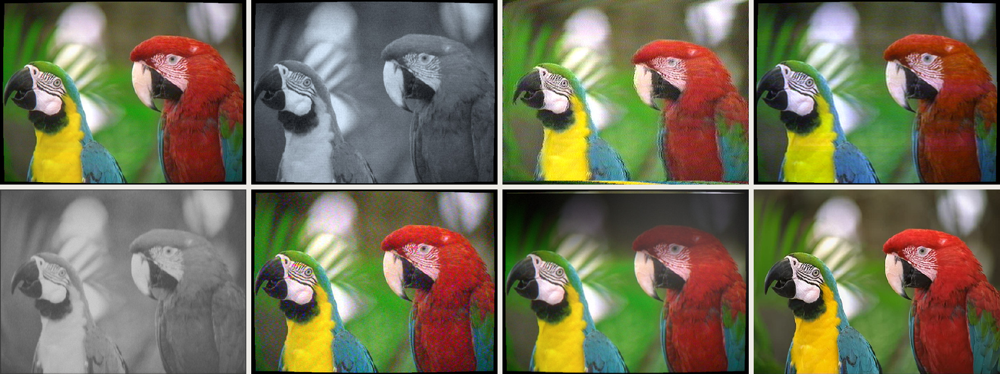

10
videolook
Television and video looks from Baird's 30 lines to broken digital streams: 405-line to PAL, NTSC and SECAM, tube cameras, Quad to VHS, teletext and CRT sets, terminals and home computers, CCTV, wired TV, pay-TV scrambling, video synthesisers, LCD, plasma and LED screens, night vision, thermal cameras, videophones and early web video, vector displays, video printers, fax, wirephoto and weather-satellite pictures, lost keyframes and macroblock break-up, and the pictures of other instruments: space-probe cameras, Landsat, radar and sonar screens, ultrasound, CT, MRI, X-ray and gamma cameras, and electron and atomic force microscopes, early digital cameras, scanners and slit-scan, instant film, computer print-out, and pictures sent by cable and radio before television, videotex, slow-scan TV and radiofax, and early web images.

about
The companion to FilmLook for television. It does not paint a look on: it turns the photo into a real video signal at the standard's own resolution (575 lines of about 922 samples for PAL, sampled at four times the colour subcarrier), passes it through a camera, a transmission channel, a tape machine and any transfer, then decodes it with the chosen receiver, so cross-colour, dot crawl, NTSC hue errors, PAL desaturation, Hanover bars and SECAM streaks come out of the maths as they did in reality. A display stage then rebuilds the picture at document size with scan lines, shadow mask or aperture grille, glow and tube geometry, or as a clean frame-grab, or as a photograph of the screen. The numbers come from the standards themselves (ITU-R BT.470, the UK System I specification, FCC and SMPTE documents) and from BBC engineering sources: the 1964 BBC camera comparisons, the 1967 registration report, BBC training sheets on camera processing, tape and colour-under recording, receivers and the 1967 standards converter. Settings whose defaults are estimates are marked est. on the panel. Version 1.1 adds the receiving set as a stage of its own: a set built for another country's system (French System L comes out as a rolling negative on a UK set), co-channel interference from a second picture, overload, and the set's sync, so pictures tear and roll for real reasons. It also adds Soviet, East German, Japanese, Brazilian and Argentine systems, Hi-Vision, the pre-war systems (Baird 30 and 240 lines, Berlin and NBC 441, Moscow 343), CBS colour-wheel TV, Apollo 11, slow-scan TV, Pixelvision, CCTV, LaserDisc, CED, Canal+ scrambling and teletext. Version 1.2 adds the off-screen photograph as a proper stage: a shutter that catches one field or a whole frame, a black-and-white negative and print, flare, soft dust and the tube surround, together with two faults of older sets that turn dark captions grey (mean-level AGC and no DC restorer). The result goes on a new layer; the photo is untouched. Version 1.3 turns to the sharper, harsher end. A new Picture source stage draws the photo as a terminal, a home computer or a teletext decoder could have drawn it: character pictures on the DEC VT05 and VT100 and the IBM monochrome display, CGA and BBC Micro palettes, teletext mosaics and a Tektronix storage tube, each on its own raster, with monochrome phosphors (P1, P3, P4, P31, P39) whose colours are worked out from their published spectra. High-resolution CCTV gets 570-line cameras on 1000-line monitors, wide-angle lenses and an infrared night mode; Rediffusion's wired television, studio RGB monitors and sets with scan velocity modulation cover the sharp end of home viewing. A Digital stream stage breaks pictures the way MPEG-2 and H.264 decoders do, on real 16 x 16 macroblocks and 8 x 8 DCT blocks: lost keyframes and datamoshing, slice errors that tile, tint and jumble the rows, and H.264 error smear. Version 1.4 widens the field again. Pay-TV scrambling adds Sky's VideoCrypt cut-and-rotate (and what a home-built decoder made of it), the BBC Select line shuffles and Nagravision Syster. The Picture source stage gains the video synthesisers of the early 1970s: a Rutt/Etra-style scan processor that lifts each line by its brightness, Paik/Abe scan modulation and the magnet on the tube, Scanimate and Sandin-style colourisers, and video feedback. A flat-panel display replaces the tube with a Game Boy LCD, pocket LCD televisions, laptop STN screens, orange gas plasma, LED signs or a flip-disc board, and new cameras cover night vision from the wartime infrared converter to Gen 3, and thermal imagers with White Hot, Black Hot, Ironbow, Rainbow, Arctic and Lava palettes. Version 1.5 adds three more areas. The Digital stream stage gains a starved videophone and web codec in the manner of H.261 (1990): QCIF and CIF videophones, the grey QuickCam and CU-SeeMe, RealVideo over a 28.8k modem and 3GP phone clips, with only the most-changed blocks sent so old and new picture break up together. The Picture source stage gains a vector display that traces the picture's contours as beam strokes, in white, colour, oscilloscope green or on a radar tube. A new Screen to paper stage puts the finished picture through a machine that printed it: a dye-sublimation colour video printer, a black-and-white medical video printer, a Group 3 fax with dither and line errors, a 1930s wirephoto, or a NOAA weather satellite's APT line with its sync bars and telemetry wedges. Version 1.6 reaches beyond television to other imaging instruments, all under Picture source: space-probe cameras from TIROS-1 to Voyager (few pixels, few bits, reseau dots, lost telemetry, colour from filtered frames, Mariner 4's picture coloured in crayon on printed numbers) and Lunar Orbiter's film read out in strips; the Landsat multispectral scanner in false colour or single bands, striped in sixes; radar screens with a turning sweep on a P7 tube, weather radar, side-scan sonar and echo sounders; ultrasound, CT (really projected and reconstructed), MRI with its ringing, wrap-around and ghosts, the X-ray image intensifier and the gamma camera; and the scanning electron and atomic force microscopes. In each one the photo stands in for what the instrument saw. Version 1.7 adds the first digital cameras and camera phones (Dycam, QuickTake, QV-10, the Game Boy Camera, Mavica, early camera phones: few pixels, a colour mosaic, JPEG blocks), hand-held and flatbed scanners and slit-scan photo-finish cameras under Picture source; and under Screen to paper, instant film (SX-70, 600, Spectra, peel-apart, Instax, black and white, with manipulation, expiry and roller marks), the line printer and teleprinter (pictures made of overprinted characters), the 9-pin dot-matrix printer, the pen plotter, the thermal receipt printer, and pictures by wire and radio from before television: Bartlane cable pictures, the Fultograph and the Hellschreiber. Version 1.8 adds pictures that came down phone lines and radio: Prestel and Minitel mosaic pages, Telidon and NAPLPS pictures drawn as flat shapes, amateur slow-scan TV (Macdonald's 120 lines, Robot, Martin and Scottie modes, with static, fading, slant and pictures cut short), HF radiofax photos and charts, and the early web: GIFs in the browser-safe 216 colours or their own palettes, interlaced GIFs and progressive JPEGs caught part-way, half-loaded JPEGs, and JPEGs dithered on a 256-colour screen.
- app
- photoshop
- type
- uxp panel
- built by
- claude
- state
- working
- version
- 1.8.0
- requires
- Photoshop 24.2+, RGB, 8 or 16-bit
- plugin id
- com.simonmorse.videolook
- looks
- 370 (43 built from specifications alone)
- folder
- VideoLook-Photoshop-Plugin
quick start
- 01Open Plugins › VideoLook and choose a look. The note under the list says what the chain is and what it rests on.
- 02Draw a marquee and press Preview selection to see just that area. The whole frame still goes through the signal chain, so the preview is exact.
- 03Press Render. The look goes on a new VideoLook · layer at the top; Strength is that layer's opacity.
- 04Adjust any stage below and press Re-render last. Tick boxes on the section headers switch whole stages on and off. Save combinations under My presets.
controls
top of panel
- Look370 looks in 39 groups
- UK broadcast, US broadcast, France, Home video, Archive and transfers, Long-distance reception, USSR and Eastern Europe, Japan, Early television, Space, surveillance and toys, South America, Community TV and video art, Photographed off the screen, Subtitles, Terminals and VDUs, Teletext and home computers, CCTV and security, Piped TV and monitors, Broken digital streams, Pay-TV scrambling, Video synthesisers, Flat and odd displays, Night vision and thermal, Videophones and web video, Vector displays, Screen to paper, Space probes, Earth observation, Radar and sonar, Medical scanners, Microscopes, Early digital cameras, Scanners and slit-scan, Instant film, Computer print-out, Pictures by cable, Videotex, Radio pictures, Early web images. Choosing a look sets every stage and ticks the ones it uses.
- Strength0 – 100
- Opacity of the result layer; updates the last render live.
- SourceWhole image / Selected layer
- Whole image hides earlier VideoLook layers while it reads.
- OutputNew layer / New document
- A layer at document size, or a new document at the standard's own size in square pixels (767×575 for PAL, 647×485 for NTSC).
- FrameMatte / Crop canvas / Fill the document
- The picture is 4:3 (5:4 for early 405-line, 16:9 for Hi-Vision, 1.15:1 for Berlin 441, 1:1 for slow-scan, 3:7 tall for Baird 30-line); the rest of the document is black, or the canvas is cropped to it. Fill the document gives the picture the document's own shape instead, so nothing is cropped or bordered: use it for a poster or any design that isn't TV-shaped. The setting stays put when you change looks. Scan lines still run across, and the screen views draw a screen of the document's shape. For every edge of the design to survive, also set Overscan to 0 (Decoder & set), or use the Frame-grab view, which has no screen.
- Shift image X / Ypixels
- Moves the photo inside the picture: + X right, + Y down.
- Implied motionpixels per field, degrees
- A still has no movement; this supplies it. It brings out interlace combing, tube lag and comet tails, 3:2 pulldown and converter double images. Only the selection moves makes the selection the moving subject.
- New noise
- New random seed for noise, dropouts and grain.
camera
- Camera / pickup24 types
- Emitron, CPS Emitron, image orthicon (B&W and 3-tube colour), vidicon, 3-tube Plumbicon, 1964 four-tube, EMI 2001, Saticon camcorder, broadcast 3-CCD, consumer 1-CCD, DV 3-CCD, intermediate film (Baird / Fernseh), Apollo lunar camera, PXL-2000, CCTV and Portapak., night vision (Gen 0 infrared converter, Gen 1 Starlight scope, Gen 2 and Gen 3) and thermal (pyroelectric tube, 160 x 120 and 320 x 240 sensors). Each sets the controls below.
- Exposure−2 – +2.5 stops
- Pushes highlights into the tube's knee or the CCD's clip.
- Softness0 – 1.5% of the width
- Blurs the picture before it is scanned, like a caption camera slightly out of focus. Because it is in the camera, the set's scan lines stay crisp over a soft picture, which is how 1960s off-screen photographs of captions look.
- Wide-angle lens0 – 0.6
- Barrel distortion of a short CCTV lens: straight lines bow outward and the corners fall into the dark edge of the image circle. Amounts are estimates.
- Infrared night mode0 – 1
- A monochrome camera under an infrared lamp: plants go pale and the lamp lights the middle most. A normal photo has no infrared record, so this is an estimate throughout.
- Night vision: scene light0 – 1
- For the night-vision cameras: starlight to dusk. Darker scenes sparkle with noise; brighter ones show the tube's honeycomb pattern. Estimates throughout, since a photo has no infrared record.
- Thermal paletteWhite hot / Black hot / Ironbow / Rainbow / Arctic / Lava
- For the thermal cameras. Temperatures are guessed from colour and brightness: skin and lamps warm, sky cold.
- Edge sharpening0 – 1.5
- BBC-style contour correction: 3-tap, from green, added equally to R, G and B so the halos are neutral; off in the darks. The amount is an estimate.
- Signal-to-noise20 – 60 dB
- Camera noise, rising with frequency on photoconductive tubes.
- Lag / Comet tails
- Trails behind moving bright objects (needs implied motion).
- Image-orthicon halo
- Dark ring round bright objects. Its size is an estimate.
- Red / Blue registration−150 – +150 ns
- Colour tubes out of register. The BBC's 1967 tolerance was 25 ns for 3-tube cameras (0.05% of the width) and 50 ns for a 4-tube camera's colour tubes.
picture source
- Picture made bynone / Character picture / Bitmap with a palette / Teletext mosaics / Rutt/Etra scan processor / Paik/Abe scan modulation / Colouriser / Video feedback / Vector display / Space-probe camera / Film read out in strips / Multispectral scanner / Radar screen / Side-scan sonar / Echo sounder / Ultrasound / CT / MRI / X-ray image intensifier / Gamma camera / Scanning electron microscope / Scanning probe microscope / Early digital camera / Scanner / Slit-scan camera / Minitel / Telidon / Slow-scan TV / HF radiofax / Early web image
- Replaces the photo with what a terminal, a computer or a teletext decoder could actually show, on the standard's own raster. Usually used with Standard & colour switched off, so the picture drives the monitor directly.
- CharactersASCII / IBM PC set with shade blocks
- Each cell gets the character (and bright or normal level) that best matches the photo there, judged on overall tone and shape. VideoLook's dot font stands in for each terminal's character ROM.
- Reverse video, Dot stretching
- Reverse cells allow solid light areas; dot stretching is the VT100's trick of lengthening every dot by one.
- Palette, Dither1-bit, 16 greys (QuickCam, CU-SeeMe), MDA 4 levels, CGA palettes, RGBI 16, 8-colour digital RGB, BBC MODE 1; none / ordered / error diffusion
- Ordered (Bayer) dither gives the regular cross-hatch of the period; error diffusion (Floyd-Steinberg) the finer scatter.
- Teletext mosaics, hold mosaicsContiguous / Separated; on / off
- 40 x 24 cells of 2 x 3 blocks in seven colours. Each colour change costs a cell, shown as a space unless Hold Mosaics repeats the last block.
- Contrast, Brightness before conversion
- How the operator prepared the picture before converting it.
- Storage-tube background glow0 – 0.3
- The faint glow the Tektronix tube's flood guns give the whole screen.
- Scan processor: lines, height, rotation, depth, trace brightness
- Each line is drawn lifted by its brightness, as on the Rutt/Etra: fewer lines and more height make a ridged landscape.
- Scan modulation: frequency and amount across and down, waveform0 – 2,000 Hz across, 0 – 20,000 Hz down
- Audio tones bend the raster. Multiples of the field rate (50 or 60 Hz) keep the bends still and symmetrical.
- Magnet on the tube: strength, across, down
- Twists the raster round a point.
- Colouriser colours, edge emphasis, soft level changes
- Slices the grey scale into flat colours; edge emphasis adds the differentiator's outlines.
- Feedback: zoom, trips round the loop, hue turn, loop strength
- A camera pointed at its own monitor: pulled back for a tunnel, zoomed in with gain for runaway smears.
- Vector display: detail, contour levels, straighten strokes, colour by level, beam colour, corner dots, beam width
- The picture becomes a list of strokes: contour lines of its brightness, straightened, drawn by the beam on black. Fewer levels and more straightening give a few angular strokes; colour by level suits a colour vector monitor.
- Instrument controls
- Choosing an instrument shows its own controls and hides the rest: pixels and bits, reseau marks and lost lines for probes; strips and seams for Lunar Orbiter; bands, striping and skew for Landsat; radius, sweep, afterglow, rings and colours for radar; height, relief and speckle for side-scan sonar; probe shape, beam lines, shadows and display for ultrasound; matrix, angles, window and level for CT and MRI, with motion ghosts, wrap-around and chemical shift for MRI; pincushion, glare and dose for the image intensifier; counts and colours for the gamma camera; edge glow, charging and the data bar for the SEM; line offsets, streaks and relief shading for the probe microscope. Picking a different instrument starts it from its defaults.
- Camera and scanner controls
- Early digital camera: pixels across and down, colour mosaic, saturation, exposure, clipping, smear, noise, edge enhancement, JPEG compression, grey levels with dither, Game Boy greens. Scanner: flatbed or hand-held, uneven speed and wobble, passes, three-pass misregistration, a subject that moved part-way. Slit-scan: speeds, stops (which turn still things into stripes), a wavering slit, direction, timing marks and finish line.
- Videotex, radio and web controls
- Minitel: black-and-white or colour screen, joined or separated mosaic, service row text, how much of the page has arrived. Telidon: palette, detail, rounding, outlines, drawing part-way. Slow-scan TV: mode, noise, fading, slant, static crashes, whistle, colours out of step, picture cut short, a caption. Radiofax: photo or chart, phase, phasing lines, static, whistle, ink and paper. Web image: GIF or JPEG, size, palette and dither, interlace passes, progressive scans, part-loaded, shown on a 256-colour screen.
standard & colour
- Television standard37 systems and rasters
- 625 PAL (UK I, Europe B/G/H), 525 NTSC (US, Japan), SECAM (France L, USSR D/K, East Germany B/G), PAL-M, PAL-N, 405-line, 819-line (France E, Belgium F), 625 and 525 black and white, Soviet 625 and 343, Berlin and NBC 441, Baird 240 and 30, CBS field-sequential colour, Apollo 320, slow-scan 120, Hi-Vision MUSE, component 625/525. Version 1.3 adds 625 and 525 CCTV (no broadcast filter, a 1000-line monitor), the DEC VT100 (800 x 240), the IBM monochrome display (720 x 350), CGA (200 lines), a home computer on a 625-line monitor (288 lines, not interlaced), the Tektronix 4010 storage tube, and digital frames at 352 x 288, 720 x 576, 1280 x 720 and 1920 x 1080.
- Picture shape4:3 / 5:4 / 16:9
- 5:4 was 405-line's shape until April 1950. Ignored when Frame is Fill the document.
- NTSC colour codingI/Q or equal-band
- FCC I/Q, or SMPTE 170M equal-band.
channel
- RouteStudio / Aerial / Satellite FM / D-MAC
- Satellite FM is Sky on Astra (PAL over FM, sparklies on a weak dish); D-MAC is BSB (no subcarrier, so no cross-colour).
- Signal-to-noise10 – 60 dB
- Snow. The US TASO grades: 44 excellent, 34 fine, 27 passable, 23 marginal, 17 inferior.
- Ghostdelay, strength, type
- Multipath echo: 1 µs is about 2% of the picture width; positive, inverted or edge-like depending on its RF phase.
- Interference spots
- Impulse noise: white spots on 405, 819 and French L, dark on the others.
- Co-channel stationstrength, offset, position
- A second station on the same channel (long-distance reception): it shows through with its own sync bars, striped by the few-kHz carrier offset. The second picture is the photo mirrored, or a layer named second picture.
- ScramblingNone / Discret 11 / VideoCrypt / VideoCrypt through a home-built decoder / VideoCrypt-S full, half, line delay / Nagravision Syster
- Canal+ Discret 11 from 1984: each line delayed by 0, 0.9 or 1.8 µs at random. VideoCrypt (Sky, 1989): each line cut at one of 256 points and its halves swapped. VideoCrypt-S (BBC Select, 1992-94): lines shuffled in six blocks of 47 per field. Syster: each field's lines read out of a 32-line store in permuted order. Sync and colour burst are left alone, so the set still locks.
recording
- Format24 formats
- 2-inch Quad (high and low band), 1-inch B and C, U-matic (LB, HB, SP), Betacam, Betacam SP, MII, VHS (SP, LP, EP), S-VHS, Betamax, Video8, Hi8, V2000, Philips VCR, D1, Digital Betacam, D2/D3, DV, DVCPRO.
- RecordedAt the studio / At home
- Studio tape goes before transmission; a home recording is made of the received, noisy signal.
- Copy generations1 – 5
- Each copy adds tape noise and smear again.
- Timebase wobble, Dropouts, Head-switch lines, Tracking error
- Domestic machine faults. The amounts are estimates.
- Quad head banding
- Per-head bands every 16 lines, with colour errors growing across the picture.
digital stream
- What went wrongLost keyframe / datamosh, MPEG-2 slice errors, H.264 error smear, Starved videophone / web codec (H.261 style)
- Built on real 4:2:0 macroblocks with the MPEG-2 quantiser and half-pixel motion compensation.
- Coded picture sizefrom the standard / 352 x 288 / 720 x 576 / 720 x 480 / 1280 x 720 / 1920 x 1080 / CIF 352 x 288 / QCIF 176 x 144 / Sub-QCIF 128 x 96 / 320 x 240 / 160 x 120
- The size the stream was coded at; the decoded picture is scaled without softening so its blocks stay hard.
- Picture the decoder still holdsMid grey / Empty buffer / The photo mirrored / Layer named 'second picture' / The photo itself
- For a lost keyframe: the picture the new scene's motion is applied to. An empty buffer decodes as dark green; the photo itself repeated is P-frame 'bloom'.
- Frames since the error, Movement across and down0 – 60; −16 – +16 px a frame
- How long the damage has been carried on, and how the scene moves meanwhile.
- Stray vectors in flat areas0 – 24
- Block matching finds nothing to match in flat areas and picks near-random vectors, which is what smears. Estimate.
- Quantiser2 – 31
- How coarsely the blocks are coded.
- Slice errors0 – 1
- Share of macroblock rows hit. Once a row is hit the rest of it decodes wrongly (tinted tiles, strips from elsewhere, striped blocks or the last good picture) until the next row starts cleanly.
- H.264 error position, garbage0 – 1
- From the error to the bottom, blocks are predicted from their neighbours' edges, so streaks run off.
- Videophone: share of blocks sent, change needed, enlarged by the player0 – 1; 0 – 40; blocky / smoothed
- For the videophone codec. With 0 frames since the error the whole picture is coded once, coarsely. With more frames only the blocks that changed most are sent; the rest keep the earlier picture. Smoothed enlarges the small picture the way a web player did.
- Only inside the selectionNo / Yes
- For a lost keyframe: only the selected macroblocks carry the motion.
transfer
- Conversion generations1 - 12
- Repeat the conversion, each copy made from the last: with Optical and the same target standard, a picture re-shot off a monitor again and again.
- Standards conversionOptical / BBC 1967 / Digital / Motion-compensated
- Re-codes to the target standard. The BBC 1967 field store blends one field in five and insets the picture in a black border.
- TelerecordingSuppressed field / Stored field / US kinescope
- Video filmed off a monitor: fewer lines, film grain, ~40:1 range. The result is the film.
- TelecineClean / 3:2 mixed frame
- Flying-spot film scanner in place of the camera. Run FilmLook first for the film stock.
- Tape played on another systemPAL-60 / NTSC 4.43 / SECAM on PAL
- American tapes on UK machines, and SECAM on a PAL-only set (black and white with dots).
decoder & set
- Luma/colour separationNotch, low-pass, comb, none
- A notch gives cross-colour on fine detail; a comb removes it on still pictures; none is a black-and-white set, which shows the subcarrier as dots.
- PAL decoderDelay line / Simple
- All British sets had the delay line by 1970, so phase errors only reduce saturation; simple PAL shows Hanover bars.
- Phase error / Differential phasedegrees
- NTSC hue errors ("Never The Same Colour"); the PAL equivalent is lost saturation.
- Set controls
- Sharpness (up to 2, the showroom setting), contrast, brightness, colour, overscan.
- Set built forsame / UK / Dutch-German / French / Soviet
- A set for another system gets that system's carrier levels wrong: French System L shows as a negative on a UK set, with no colour, and loses sync; other sound carriers leave patterning.
- Vertical hold, Roll position, Horizontal hold, Line lock
- The set's own timebases: a sync separator, a flywheel line oscillator and a field oscillator. A clean signal locks and is unchanged; a wrong or weak one tears and rolls. The loop figures are estimates.
- Overload (lockout)0 – 1
- Too strong a signal: sync crushed, picture partly negative.
- Mean-level AGC0 – 1
- Early 405-line sets (and French 819 and System L sets) set their gain from the average signal, so a mostly black picture was turned up until it was grey and its whites over-driven. Gated AGC from the mid-1950s cured it. Only acts on those systems. The amount is an estimate.
- Black follows the picture0 – 1
- A set with no DC restorer holds the picture's average at a fixed brightness, not its black: dark pictures go grey, bright ones go too dark. Works on any system. The amount is an estimate.
- Black-level tilt0 – 1
- Makes that follow the picture down the screen: the level drops at a white caption and creeps back over the next field, leaving a grey band above the caption and black below it. Fitted to one 1968 off-screen photograph; the cause isn't established.
display & view
- TubeB&W / Delta-gun / Slot mask / Trinitron / colour wheel / P7 / Flat panel
- The phosphor pattern, sized from the screen size. P7 is the radar tube used for slow-scan TV: a blue flash, then a yellow-green afterglow. Flat panel replaces the tube with the panel chosen below.
- Panel, Panel ditherGame Boy LCD / pocket LCD TV / laptop STN / colour LCD / orange plasma (on-off, 16 shades, PLATO IV) / red or amber LED / flip-disc
- Each panel has its own resolution, number of shades, cell colours and shape. LCDs show the shadow of their pixels on the reflector and passive-matrix shading; plasma and LEDs glow. Colours and some sizes are estimates.
- Monochrome phosphorwhite / P4 / P31 / P39 / P1 / P3 / P12
- The colour of a black-and-white tube: P4 white (TV, VT100), P31 green (most green monitors), P39 green with a long glow (IBM 5151), P1 green (oscilloscopes, Tektronix), P3 amber, P12 orange. Chromaticities are worked out from each phosphor's published peak and width.
- Scan velocity modulation0 – 3
- The spot speeds up either side of an edge and slows across it, so light areas shrink and dark edges harden, as on many large sets from the 1980s on. The amount is an estimate.
- Phosphors, White point, Tube gammaEBU / SMPTE C / 1953 / Japanese; D65 / 9300 K / 9300 K + 27 MPCD
- US sets often ran at 9300 K and Japanese sets at 9300 K + 27 MPCD; no UK figure was found, so D65 is the default.
- Round tube face
- For round tubes: the KVN-49 and radar tubes.
- Mask, Scan lines, Blooming, Glow, Curvature, Corners
- Mask and scan lines draw only where the image has enough pixels, and fade out rather than making moiré on small images.
- ViewFrame-grab / Screen close-up / Photo of the screen / Magnifying lens / Televisor
- The lens is the KVN-49's water-filled magnifier; the Televisor is Baird's neon lamp and spinning disc.
- Photo exposure0 – 2 fields
- How long the shutter was open, in fields (1/50 s each in the UK). 2 is a whole frame (1/25 s, the usual rule, and John Cura's Tele-snap setting); 1 catches one field, so only every other line shows (about 188 on 405 lines); between 1 and 2 part of the screen gets both; below 1 only a band is bright. 0 is a long exposure. Scan position at the click moves the band.
- Photo softness, Glass and lens flare, Room reflection
- The camera's focus, light scattered in the faceplate and lens (it lifts the blacks near bright areas), and a window reflected in the glass.
- Pull back, Camera tilt0 – 0.3; −6 – +6°
- Shows the dark surround of the tube and a camera not held square.
- Photo finishAs seen / Black-and-white print
- Black-and-white print puts the photo through a negative and a print. Print exposure (stops) sets how light it is: lower it and the screen's whites turn grey and milky; raise it and they burn out. Print contrast is the paper grade; Print black is how deep the print's black goes.
- Photo grain0 – 1.5
- Film grain. New noise moves it.
- Dust (amount), Dust brightness0 – 1.5; 0 – 3
- The dust of a small negative enlarged: small, soft, mostly faint specks, a few of them dark, modelled on those measured in 1960s off-screen stills. Amount 0.15–0.2 is about their density and brightness 1 their strength; the looks use 0.15 or 0.2. No hairs or scratches. New noise moves the specks.
screen to paper
- Printed by(none) / Colour video printer / B&W video printer / Fax / Wirephoto / Weather satellite (NOAA APT) / Instant film / Line printer / Teleprinter picture / Dot-matrix printer / Pen plotter / Thermal receipt printer / Bartlane / Fultograph / Hellschreiber
- Runs on the finished picture, after the view. The printers, fax and wirephoto print in their own lines and dots; the satellite turns the picture into an APT line.
- Paper margin round the picture0 – 0.15
- Adds paper round the picture, like a real print. Leave it at 0 to fill your design.
- Printer: dots across, lines down, heat carried to the next line, head streaks, misregistration
- Video printers lay the picture down one line at a time with a thermal head: dark areas drag a little down the page, and uneven head elements leave faint streaks. 0 dots uses the machine's own count (720 x 468 colour, 1,280 B&W).
- B&W printer: grey levels4 – 256
- Older thermal printers had few levels and patterned the steps between them.
- Fax: pels across, resolution, photo mode, line errors, bad lines printed as, scanner dirt, paper, fading
- Group 3: about 203 pels to the inch across and 98 (standard) or 196 (fine) lines to the inch down, one bit each. Photo mode dithers the greys; text mode gives pure black and white. Line errors garble runs or repeat the line before.
- Wirephoto / satellite: lines; wirephoto timing wander, mains hum, crackle, print tone
- A wirephoto is about 100 lines to the inch, each line a continuous tone sent over a telephone line, printed glossy.
- Satellite: lines lost to static, shown, noise, noise at the start and end of the pass, slant, colours, printed on
- The whole APT line shows both channels with their sync bars and telemetry wedges; channel A or B alone fills the picture. The infrared channel is made up from the picture. Slant imitates a decoder that has not locked.
- Print-out controls
- Each new machine shows its own controls: film, frame (off by default), manipulation, expiry and rollers for instant film; characters across, lines to the inch, overprinting, tone and green-bar paper for the line printer and teleprinter; density, dither, misaligned passes and ribbon for dot matrix; pens, spacing, width and angle for the plotter; dots, dead elements and fading for receipts; tones and printing for Bartlane; lines, fading, static and slip for the Fultograph; strips, gap and slant for Hell. Ink and paper colours can be changed.
overlay
- Subtitles12 styles
- Typeset with your installed fonts (a temporary text layer, read and deleted), then burned in where they belonged: on the film print (chemically etched with ragged letters, or laser-etched with a thin dark halo), at the studio (BBC slab serif with a black edge or on a grey label, Arial italic with a soft shadow, VHS release, Dutch TV, Channel 4, DVD 4-colour bitmap, early black box), or by the set (US Line 21 closed captions). The BBC's own face, TKST, isn't available: Rockwell stands in. Font, italic, size, colour, edge, position (bottom, middle for titles, or top) and case can all be changed.
- OverlayTeletext / Date-time stamp
- Teletext is drawn by the set after the decoder: mixed over the picture, as a full page, or as boxed subtitles. The stamp is burned in before recording, so the tape softens it.
- Load font list, Filter families, Font family, Font style
- Press Load font list once per session to fetch your installed fonts from Photoshop (it isn't read at start-up, so it can't hold up other panels). Type part of a name in Filter families to narrow the list, then pick the family and style. Leave the family on the style's own font to use the style's list.
- or PostScript name
- Type a PostScript name instead (e.g.
Arial-ItalicMT), or several separated by commas, used in order of preference. Font Book shows it in each font's info panel. - Text
- Colours with {red} {green} {yellow} {blue} {magenta} {cyan} {white}, double height with {dh}, boxes with {box}...{/box}; 40 characters a line. The font is VideoLook's own.
workflow
film on television
For 1970s drama exteriors or any film shown on TV, render the FilmLook stock first, then apply VideoLook's telecine look to the result.
long-distance reception
Summer lift, French TV on a UK set, Sporadic-E: pick the look, then move Co-channel strength, Roll position and Horizontal hold, and press New noise for another moment. For a real second station, add a layer named second picture.
off-screen photographs
For a 1960s station symbol or caption as it survives in off-screen photographs: start with white artwork on black, choose a look from Photographed off the screen, then move Print exposure (grey and ghostly, or burnt out), Softness under Camera, and Mean-level AGC and Black follows the picture under Decoder & set. See the Look Cookbook.
terminals and computers
Character pictures read best from pictures with strong shapes and plain backgrounds. Raise Contrast before conversion under Picture source if a face goes to blank cells; try Screen close-up and then Photo of the screen for a period print.
broken streams
For a datamosh between two pictures, put the earlier scene on a layer named second picture and choose Datamosh from a second picture. Change Frames since the error and the Movement sliders, and press New noise for another break-up.
video synthesisers and panels
Scan-processor looks work best on pictures with large light and dark shapes. Chain a second instrument by trying the colouriser after a scan-processor look. Panel looks crop the picture to the panel's own shape, so move the subject with Shift image if it falls outside.
videophones, vectors and paper
Videophone looks are tiny pictures enlarged, so they read best at a distance. Vector looks need clear light and dark shapes; raise the detail for busy pictures. Screen to paper works on the whole picture, so a preview of a selection still renders everything first and takes a little longer.
instruments
The instruments read the photo as their subject: brightness becomes echo strength, height, density or activity, and edges become echoes. Strong shapes and clear contrast work best. Set Frame to Fill the document to use the whole canvas; the round screens (radar, CT, image intensifier) then sit in the middle. Put a radar look on the P7 tube, or send an ultrasound to the B&W video printer under Screen to paper, to finish it the way it was seen.
print-outs and early digital
The print-outs run on the finished picture at the document's size, so a large document gives the line printer, plotter and Hell tapes room to show their marks; a small one makes them coarse. Instant film fills the document unless you turn its frame on. For a Game Boy Camera picture on its own printer, combine the camera with the receipt printer, as the look of that name does.
videotex, radio and web
These looks redraw the photo the way the system carried it, at the system's own small size, so they look the same whatever the document size. Prestel and Minitel look best on their screens (the looks that end in a set or tube); the clean versions suit graphic work. The loading looks (part-drawn pages, first GIF pass, first JPEG scan) are snapshots of a picture still arriving.
evidence
Ten looks (Alexandra Palace 1937, 405-line at home, US live 1950, French 819-line, Moscow 343, Baird 240, Berlin and NBC 441, CBS colour, Belgian 819) are built from the specifications alone, because no authentic pictures survive. The rest are research-based and can be calibrated against reference frames.
gotchas
- Large documents take a while: a 24-megapixel render with a CRT view is roughly 10–20 seconds. Preview selection is quicker.
- The Tektronix storage-tube look works on a 2048-sample raster and takes several times longer than the other terminal looks.
- A Photo of the screen is made from the whole picture (flare, grain, dust, tilt), so its previews take as long as a full render, and a one-field photo draws the screen twice.
- The photo is treated as sRGB; convert documents in other profiles first.
- A still cannot show movement: the 60-field 'video look' of US sitcoms, dot crawl moving and interlace flicker are not there. Implied motion shows what a single frame of movement would look like.
- 32-bit documents are not supported.
- Hi-Vision has no camera stage (HD cameras aren't modelled) and needs Implied motion with 'Only the selection moves' to show its motion blur.
looks
uk broadcast
- BBC Alexandra Palace, 1937from the specifications · Emitron / iconoscope → 405-line (UK, B&W) → 12in black-and-white tube
- 405 lines, 5:4 picture, Emitron camera, seen on a pre-war set. No live pictures survive, so this is built from the standards; the set's size and phosphor colour are estimates.
- 405-line live studio at home, 1953from the specifications · CPS Emitron → 405-line (UK, B&W) → 14in black-and-white tube
- BBC 405-line picture on a 14in set: 3 MHz, 377 lines, visible scan lines. Live pictures only survive on film, so the as-broadcast look is built from the standards.
- 405-line telerecording, 1953research-based · Emitron / iconoscope → 405-line (UK, B&W) → suppressed-field telerecording → frame-grab
- How surviving 1950s BBC television looks (e.g. The Quatermass Experiment): suppressed-field film recording keeps 188.5 lines, with spot wobble, film grain and a ~40:1 range.
- BBC2 625-line monochrome, 1964research-based · Image orthicon (B&W) → 625-line B&W → 19in black-and-white tube
- 625 lines, 5.5 MHz, on a 19in set. The BBC2 camera fleet was not found; an image orthicon is assumed.
- UK colour studio, mid-1970sresearch-based · EMI 2001 four-tube Plumbicon → 2-inch Quad, high band → 625 PAL (UK System I) → 22in delta-gun set
- EMI 2001 four-tube Plumbicon camera, 2-inch Quad, PAL System I, on a 22in delta-gun set with the PAL delay line all British sets had.
- UK colour outside broadcast, early 1970sresearch-based · 3-tube Plumbicon → 2-inch Quad, high band → 625 PAL (UK System I) → 22in delta-gun set
- 3-tube Plumbicon OB camera on Quad. OB picture traits are not documented; the camera settings are the studio ones.
- 1970s drama: 16 mm film exteriorsresearch-based · flying-spot telecine → 625 PAL (UK System I) → 22in delta-gun set
- Film shot on location, through a Rank Cintel flying-spot telecine. Run FilmLook first for the 16 mm stock, then this.
- 1970s drama: studio video interiorsresearch-based · EMI 2001 four-tube Plumbicon → 2-inch Quad, high band → 625 PAL (UK System I) → 22in delta-gun set
- The other half of the film-and-video mix: EMI 2001 cameras on Quad, as Doctor Who's studio scenes were made.
- Colour show on B&W film (with PAL dots)research-based · EMI 2001 four-tube Plumbicon → 625 PAL (UK System I) → stored-field telerecording → frame-grab
- A colour programme kept only as a 16 mm black-and-white telerecording for overseas sales; the unfiltered PAL subcarrier leaves fine dots in coloured areas (the basis of BBC colour recovery). Dots show best on large documents.
- News on U-matic, 1983research-based · 3-tube Plumbicon → U-matic high band → 625 PAL (UK System I) → 20in slot-mask set
- Tube ENG camera on high-band U-matic, edited and broadcast; the BBC's colour-under figures set the U-matic colour.
- News on Betacam SP, 1989research-based · 3-CCD broadcast → Betacam SP → 625 PAL (UK System I) → 21in slot-mask set
- CCD camera on Betacam SP (component, ~4.5 MHz luma, 1.5 MHz colour).
- Sky on Astra, 1990research-based · 3-CCD broadcast → 625 PAL (UK System I) → 21in slot-mask set
- Analogue PAL over an FM satellite link, so all PAL artefacts remain; sparklies appear on a weak dish. Satellite noise amounts are estimates.
- BSB D-MAC, 1990research-based · 3-CCD broadcast → 625 PAL (UK System I) → 21in slot-mask set
- BSB's D-MAC: no subcarrier, so no cross-colour or dot crawl; sharper colour across, half the colour detail down. Bandwidths estimated from the compression ratios.
- Teletext page mixed over the picture, 1983research-based · EMI 2001 four-tube Plumbicon → teletext mix → 625 PAL (UK System I) → 22in slot-mask set
- The set's teletext decoder writing a page over the programme ('mix'): 24 rows of 40 characters on the 6 MHz dot clock, rounded characters, eight colours. The font is VideoLook's own; the page text is invented and editable under Overlay.
- Teletext subtitles, 1985research-based · EMI 2001 four-tube Plumbicon → teletext subtitle → 625 PAL (UK System I) → 22in slot-mask set
- Page 888-style subtitles: double-height text in black boxes, white first then yellow, cyan and green for other speakers. Text invented and editable under Overlay.
us broadcast
- US live TV, 1950from the specifications · Image orthicon (B&W) → 525-line B&W → 17in black-and-white tube
- 525-line monochrome from an image orthicon (dark halo round highlights), 4.2 MHz, on a 17in set. Live pictures survive mainly as kinescopes.
- US kinescope, 1952research-based · Image orthicon (B&W) → 525-line B&W → kinescope → frame-grab
- 525/60 filmed at 24 fps; a drifting shutter leaves a brighter band. 16 mm grain and ~40:1 range.
- Early RCA colour, 1958research-based · 3-tube image orthicon colour (Marconi/RCA) → 2-inch Quad, high band → 525 NTSC (US) → 21in delta-gun set
- 3-tube image orthicon colour camera, NTSC with the 1953 primaries on a delta-gun set; equal-band colour decoding.
- US network sitcom, 1975research-based · 3-tube Plumbicon → 2-inch Quad, high band → 525 NTSC (US) → 19in slot-mask set
- Multi-camera Plumbicon studio on Quad, NTSC, on a slot-mask set at 9300 K. Its famous 'video look' is mostly 60-field motion, which a still cannot show.
- US local news, 1985research-based · 3-tube Plumbicon → U-matic high band → 525 NTSC (US) → 19in slot-mask set
- Tube ENG camera on U-matic, NTSC over the air.
france
- French 819-line TV, 1960from the specifications · Image orthicon (B&W) → 819-line (France, B&W) → 17in black-and-white tube
- RTF 819 lines, 10 MHz: the sharpest broadcast standard before HD. Camera type not found; an image orthicon is assumed.
- ORTF SECAM colour, 1975research-based · 3-tube Plumbicon → 625 SECAM (France L) → 22in delta-gun set
- SECAM L: FM colour on alternate lines (half the colour detail down, streaks on colour edges). Studios often worked in PAL or component and coded SECAM for transmission.
home video
- VHS off-air recording, 1986 (UK)research-based · 3-tube Plumbicon → VHS (SP) off-air → 625 PAL (UK System I) → frame-grab
- A broadcast recorded on a home VHS at SP from an aerial with a faint ghost, as a frame-grab.
- VHS third-generation copyresearch-based · 3-tube Plumbicon → VHS (LP) off-air → 625 PAL (UK System I) → frame-grab
- An off-air LP recording copied twice more: noise, smear and wobble build up with each generation.
- VHS off-air recording, 1988 (US)research-based · 3-tube Plumbicon → VHS (SP) off-air → 525 NTSC (US) → frame-grab
- NTSC VHS SP off-air, frame-grab.
- Betamax off-air, 1981research-based · 3-tube Plumbicon → Betamax off-air → 625 PAL (UK System I) → frame-grab
- Betamax recording of a broadcast. Betamax figures are estimates.
- Tube camcorder, 1984research-based · Saticon tube camcorder → VHS (SP) → 625 PAL (UK System I) → frame-grab
- Single Saticon tube (lag, orange-red flare, soft colour) recording to VHS-C.
- Video8 camcorder, 1988research-based · Single-CCD consumer camcorder → Video8 → 625 PAL (UK System I) → frame-grab
- Single-CCD consumer camcorder on Video8 (vertical smear on highlights).
- Hi8 camcorder, 1994research-based · Single-CCD consumer camcorder → Hi8 → 625 PAL (UK System I) → frame-grab
- Sharper Hi8 luma, same narrow colour.
- S-VHS camcorder, 1992research-based · Single-CCD consumer camcorder → S-VHS → 625 PAL (UK System I) → frame-grab
- S-VHS: sharp luma, VHS colour.
- MiniDV, 2002 (PAL)research-based · DV 3-CCD → DV / DVCAM (PAL 4:2:0) → Component 625 (studio/digital) → frame-grab
- 3-CCD DV camcorder: 4:2:0 colour, 8×8 DCT blocks and mosquito noise at 25 Mbit/s, hard highlight clip.
- MiniDV, 2002 (NTSC)research-based · DV 3-CCD → DV (NTSC 4:1:1) → Component 525 (studio/digital) → frame-grab
- NTSC DV: 4:1:1 colour (only 180 colour samples across).
- LaserDisc (PAL, CLV crosstalk), 1990research-based · flying-spot telecine → LaserDisc (CLV) → 625 PAL (UK System I) → 25in Trinitron
- A film on a long-play (CLV) LaserDisc: full broadcast detail on an optical disc, but crosstalk from the neighbouring track drifts through as bands of fine noise ('barber poles'). Crosstalk form and amount [EST].
- LaserDisc with laser rotresearch-based · flying-spot telecine → LaserDisc with laser rot → 625 PAL (UK System I) → frame-grab
- An oxidised disc: sparkling specks, some coloured, some dark, scattered over the picture. Density [EST].
- RCA CED videodisc, worn (1983)research-based · flying-spot telecine → RCA CED videodisc (worn) → 525 NTSC (US) → 19in slot-mask set
- RCA's grooved capacitance disc: 3 MHz of detail, narrow colour, and dust and wear ('video virus') giving dropouts and snow. How the colour was carried isn't confirmed; modelled as a narrow colour band.
archive and transfers
- US show on the BBC, 1970research-based · 3-tube Plumbicon → 2-inch Quad, high band → 525 NTSC (US) → BBC 1967 converter to 625 PAL → 22in delta-gun set
- NTSC converted to PAL by the BBC's 1967 field-store converter: picture inset with black borders; with implied motion, one field in five is a double image.
- UK show on US TV, 1985research-based · EMI 2001 four-tube Plumbicon → 625 PAL (UK System I) → digital converter to 525 NTSC → 19in slot-mask set
- PAL converted to NTSC by a digital four-field converter.
- Optical standards conversion, 1962research-based · 3-tube image orthicon colour (Marconi/RCA) → 525 NTSC (US) → optical conversion to 625 PAL → frame-grab
- A camera pointed at a monitor: the source scan lines beat against the new ones.
- NTSC tape on a UK VCR (PAL-60)research-based · 3-tube Plumbicon → VHS (SP) → 525 NTSC (US) → played as PAL-60 → 21in slot-mask set
- An American VHS played on a UK machine that outputs PAL-60: correct colour, but only 480 lines, so the line structure is coarser.
- NTSC 4.43 on a PAL-only setresearch-based · 3-tube Plumbicon → VHS (SP) → 525 NTSC (US) → played as NTSC 4.43 → frame-grab
- NTSC colour on the PAL subcarrier has no V switch, so a PAL set's delay line cancels half the colour: reds turn dark.
- SECAM tape on a PAL-only setresearch-based · 3-tube Plumbicon → 625 SECAM (France L) → SECAM on a PAL-only set → 21in slot-mask set
- No SECAM decoder: black and white, with the FM subcarrier showing as a dot pattern even on greys.
- US film telecine with 3:2 pulldownresearch-based · flying-spot telecine → 525 NTSC (US) → frame-grab
- Film on NTSC: two frames in five mix two film frames. Set Implied motion to see the combing.
- Photo of the TV screen, 1978research-based · EMI 2001 four-tube Plumbicon → 2-inch Quad, high band → 625 PAL (UK System I) → 22in slot-mask set, photographed
- A UK colour broadcast photographed off a slot-mask set at 1/125 s: the exposure catches only part of the scan, so a band is brighter.
long-distance reception
- Summer lift: Dutch TV on a UK set, 1983research-based · 3-tube Plumbicon → 625 PAL (Europe B/G/H) → co-channel interference → received on a UK set (System I PAL) → 22in slot-mask set
- Nederland 1 or 2 (Goes, Lopik) across the North Sea under a summer high. Dutch System G PAL: full colour, no sound on a UK set, and the 5.5 MHz Dutch sound carrier leaves fine patterning. A weak co-channel station floats underneath, striped by the carrier offset. The mechanisms are documented; the amounts (signal level, interference) are yours to set. For a real second picture, name a layer 'second picture'.
- Belgian RTBF on a UK set, 1984research-based · 3-tube Plumbicon → 625 PAL (Europe B/G/H) → received on a UK set (System I PAL) → 22in slot-mask set
- RTBF 1 or Télé 2 on a good lift: Belgian PAL (System H on UHF, 5.5 MHz sound), so colour but silence on a UK set, with faint sound-carrier patterning. Signal level [EST].
- French TV (TF1, Antenne 2) on a UK set, 1983research-based · 3-tube Plumbicon → 625 SECAM (France L) → received on a UK set (System I PAL) → 22in slot-mask set
- France's System L puts the picture on the carrier the other way up (positive modulation), so a UK set shows a negative; its SECAM colour is lost; and the set can't find the French sync, so the picture tears sideways and rolls, with the blanking showing as white bars. Built from the ITU levels and receiver behaviour; no off-screen photos checked. New noise gives another moment; Vertical hold 'rolling' and Roll position move the bar.
- Canal+ without a decoder, 1984research-based · 3-CCD broadcast → 625 SECAM (France L) → Discret 11 scrambling → 22in slot-mask set
- Canal+ (from 4 Nov 1984) scrambled with Discret 11: every line delayed by 0, 0.9 or 1.8 µs at random, black filling the gap. Shown on a French SECAM set. The delays are documented; the pseudo-random sequence here is VideoLook's own.
- Sporadic-E on Band I, DXer's portable, 1978research-based · 3-tube Plumbicon → 625 PAL (Europe B/G/H) → co-channel interference → 12in black-and-white tube
- A distant continental Band I station by Sporadic-E (May to September, 500-1,400 miles) on a black-and-white portable: snow, a long echo, and a second station on the same channel sliding across. Mechanisms from Bunney (1981); all amounts [EST].
- Overloaded set near a transmitter (lockout)research-based · EMI 2001 four-tube Plumbicon → 625 PAL (UK System I) → overloaded set → 22in slot-mask set
- Too much signal: the set's IF stage overloads and the sync tips are crushed below the picture: 'lockout, i.e. negative picture and buzz' (Television, July 1976). One source; the overload curve is [EST].
ussr and eastern europe
- Moscow 343-line, 1938from the specifications · Emitron / iconoscope → 343-line (Moscow 1938) → 12in black-and-white tube
- 343 lines at 25 frames on RCA equipment (from 1938; dates conflict). Bandwidth 3.29 MHz and negative modulation are RCA's figures from a single source; an iconoscope camera is assumed.
- Soviet 625-line on a KVN-49 with its water lens, 1950research-based · Emitron / iconoscope → 625-line B&W (USSR, 6 MHz) → 7in black-and-white tube through its lens
- The Soviet Union's own 625-line standard (the one Europe adopted), 6 MHz, on the KVN-49: a 140 x 105 mm picture on an 18 cm round tube, seen through the add-on lens filled with water or glycerine (about 4x). The lens's distortion, fringing and reflection are [EST]; the studio camera is not researched (an iconoscope is assumed).
- Soviet colour on a Rubin set, late 1970sresearch-based · 3-tube Plumbicon → 625 SECAM (USSR/East D/K) → 24in delta-gun set
- SECAM on System D/K from 1 Oct 1967: the same colour coding as France but the ordinary negative modulation, so interference makes dark spots. Soviet tube phosphors per GOST 26799-85 are the EBU set. Camera assumed.
- East German SECAM colour, 1975research-based · 3-tube Plumbicon → 625 SECAM (East Germany B/G) → 22in delta-gun set
- DFF colour from 1969: SECAM on System B/G (5 MHz), until the switch to PAL at the end of 1991. East German set phosphors not found; EBU assumed.
japan
- Japanese NTSC on a 9300 K set, 1985research-based · 3-tube Plumbicon → 525 NTSC (Japan, no set-up) → 21in Trinitron
- NTSC-J: black sits at blanking (no 7.5% set-up), and receivers were set to 9300 K + 27 MPCD, a cool, slightly green white (x 0.281, y 0.311). Receiver phosphors from a 1979 Matsushita patent. Many real sets measured nearer 8500-8800 K.
- Hi-Vision (MUSE) analogue HD, 1991research-based · 1125-line Hi-Vision MUSE → 36in Trinitron
- NHK's 1125-line analogue HD by satellite (1989-2007). Still pictures keep ~598 lines of detail, but anything moving drops to about a quarter: set Implied motion and tick 'Only the selection moves' to see it (camera pans stay sharp). No camera stage: HD cameras aren't modelled.
- Sony CV-2000 home video, 1966research-based · Vidicon → Sony CV-2000 home VTR (B&W, skip-field) → 525-line B&W → 11in black-and-white tube
- One of the first home video recorders: half-inch tape, black and white, recording only one field and showing it twice (skip-field), about 220 lines. With a vidicon camera.
- Sony Portapak video art, 1970research-based · Portapak vidicon → EIAJ-1 Portapak (1/2 in reel, B&W) → 625-line B&W → 12in black-and-white tube
- EIAJ-1 half-inch reel recorder and vidicon camera (needed about 50 foot-candles): black and white, laggy, noisy, with 'flagging' at the top on replay. European (625) version.
early television
- Baird 30-line on a Televisor, 1933research-based · 30-line Baird (1929-35) → Televisor
- The BBC's 30-line service (to 1935): 30 vertical lines, 12.5 pictures a second, a tall 3:7 picture sent on a medium-wave channel (~10 kHz), seen as an orange neon glow through a spinning disc, 'about the size of a postage stamp'. Off-air recordings survive at tvdawn.com for comparison.
- Baird 240-line intermediate film, 1936from the specifications · Intermediate film → 240-line Baird (1936-37) → 12in black-and-white tube
- Alexandra Palace, Nov 1936-Feb 1937, alternating with EMI's 405 lines: shot on film, developed in about a minute and scanned wet. 240 lines at 25 frames; bandwidth and picture shape not found (4:3 and equal detail assumed). No pictures survive.
- Berlin 441-line, 1938from the specifications · Emitron / iconoscope → 441-line (Germany 1937-44) → 12in black-and-white tube
- Fernsehsender Paul Nipkow: 441 lines interlaced (383 active), 2 MHz, positive modulation, a nearly square 1.15:1 picture (single source). Iconoscope camera.
- NBC 441-line, 1940from the specifications · Emitron / iconoscope → 441-line (US 1939-41) → 12in black-and-white tube
- The pre-war American standard (1939-41): 441 lines, 60 fields, 2.8 MHz, negative modulation (single source). RCA iconoscope camera.
- CBS field-sequential colour, 1951from the specifications · 3-tube image orthicon colour (Marconi/RCA) → 405-line CBS field-sequential colour (1951) → 12in colour-wheel set
- Broadcast June-October 1951: 405 lines, 144 fields a second, each field one colour, put back together by a spinning colour wheel in front of a black-and-white tube. About half the horizontal detail of ordinary 525-line. Set Implied motion to see colours split apart on movement. Filter colours [EST].
- Belgian 819-line, 1955from the specifications · Image orthicon (B&W) → 819-line (Belgium F, B&W) → 17in black-and-white tube
- Belgium's 819-line System F (1953-68) squeezed the French line count into 7 MHz channels: ~5 MHz of video (sources say 5 or 5.5), so far less horizontal detail than French 819.
space, surveillance and toys
- Apollo 11 moonwalk as broadcast, 1969research-based · Apollo lunar camera → 320-line Apollo lunar camera → optical conversion to 525-line B&W → 19in black-and-white tube
- The lunar camera sent 320 lines at 10 frames a second; on Earth an RCA TK-22 camera re-shot a 10-inch monitor to make NTSC, losing contrast and detail, and the monitor's persistence left moving figures trailing ghosts (needs Implied motion). Honeysuckle Creek settings; set Converter contrast up for Goldstone's over-contrasty picture.
- Fisher-Price Pixelvision, 1988research-based · Fisher-Price PXL-2000 → PXL-2000 audio cassette (8 grey levels) → 525-line B&W → 13in slot-mask set
- The PXL-2000 toy camcorder: a 120 x 90 CCD recorded on audio cassette at 9x speed, black and white with only a few grey levels (one source says about 8), shown small in the middle of the TV. Inset size and noise [EST].
- Time-lapse CCTV, 1994research-based · Black-and-white CCTV camera → date stamp → Time-lapse CCTV VHS (24 h mode, B&W) → 625-line B&W → frame-grab
- A black-and-white CCTV camera on a time-lapse VHS in 24-hour mode (5 fields a second, 300 lines), date and time burned in, replayed as a single field. Recorder figures from a period manual; the rest [EST]. Edit the stamp under Overlay.
- Amateur slow-scan TV on a radar tube, 1958research-based · 120-line slow-scan (1958) → 7in P7 radar tube
- Copthorne Macdonald's 1958 slow-scan TV: 120 lines, 8 seconds a picture, sent as audio over short-wave, shown on a P7 radar tube whose blue flash fades to a yellow-green afterglow lasting about 10 s, so the top of the picture has already faded as the bottom is written. Afterglow colours [EST].
south america
- Brazilian PAL-M, 1985research-based · 3-tube Plumbicon → 525 PAL-M (Brazil) → 20in slot-mask set
- Brazil's PAL-M (colour from 1972): American 525/60 scanning with PAL colour on its own 3.576 MHz subcarrier, so no NTSC hue errors but 4.2 MHz of detail and the 7.5% set-up. Set phosphors assumed.
- Argentine PAL-N, 1985research-based · 3-tube Plumbicon → 625 PAL-N (Argentina) → 20in slot-mask set
- Argentina's N/PAL: European 625/50 in American 6 MHz channels, 4.2 MHz of video and a 3.58 MHz PAL subcarrier nearer the luma, so softer and with more cross-colour than European PAL. Black at blanking (no set-up).
community tv and video art
- Swindon Viewpoint, 1974 (black-and-white cable)research-based · Portapak vidicon → EIAJ-1 Portapak (1/2 in reel, B&W) → 625-line B&W → 22in black-and-white tube
- Britain's community cable station (from Sept 1973, EMI-funded, on the Radio Rentals relay network). Until 1977 it was black and white: Sony Portapaks and 1-inch Sony recorders, low light on location, copy-edited with a glitch at each edit, then carried cleanly by cable. The half-inch Portapak format stands in for both machines; the haloes come from the set's sharpness control here, which is [EST].
- Swindon Viewpoint, 1978 (colour U-matic)research-based · Saticon tube camcorder → U-matic low band → 625 PAL (UK System I) → 22in slot-mask set
- From 1977 the station moved to colour: U-matic recorders and single-tube Sony cameras, and by its own account 'picture quality, or at least resolution, went down somewhat with the move to colour'. Single-tube camera model stands in [EST].
- Re-shot off a monitor, again and againresearch-based · 3-tube Plumbicon → 625 PAL (UK System I) → optical conversion to 625 PAL → 22in slot-mask set
- After David Hall's 'This Is A Television Receiver' (BBC, 1976), where a newsreader was re-shot off a monitor, each copy from the last, 'until there is a complete degeneration of both sound and image'. Set Conversion generations under Transfer (1-12). The monitor-and-camera model is the optical converter's [EST].
- Videotape to cinema film, 1964 (Electronovision-style)research-based · Image orthicon (B&W) → 2-inch Quad, high band → 525-line B&W → kinescope → frame-grab
- Before 200 Motels, Electronovision shot plays and concerts on videotape and moved them to film by kinescope for cinemas (Hamlet, The T.A.M.I. Show, 1964). A US colour-era camera on Quad, filmed off a monitor at 24 frames.
photographed off the screen
- Tele-snap: ident, grey and ghostly (1960s)research-based · Vidicon → 405-line (UK, B&W) → 19in black-and-white tube, photographed on black-and-white film
- A station symbol or caption photographed off a 405-line set on black-and-white film: whites come out a soft mid-grey with a faint glow, as in some 1960s off-screen stills. Matched to their measured tones (whites about 40-60% of full white, edges spread over about 1% of the width, about 190 lines down the screen, which is one field). Why the whites are grey isn't established (a thin negative, a dark print or a fade would all do it): Print exposure sets it, and about -2.6 gives the darkest ones. Works best on white graphics on black.
- Tele-snap: ident, burnt-out whites and grey blacks (1960s)research-based · Vidicon → 405-line (UK, B&W) → 19in black-and-white tube, photographed on black-and-white film
- The opposite print: whites burnt out and swollen so the scan lines close up inside them, blacks a dusty dark grey. On a set with mean-level AGC and no DC restorer a mostly black caption is turned up and lifted ('a screen that was not black but mid-grey'), and the over-driven spot blooms. Both set faults are documented for 405-line sets; how much of each a given photograph shows is not.
- Tele-snap: caption with a grey band above it (1968)research-based · Vidicon → 405-line (UK, B&W) → 19in black-and-white tube, photographed on black-and-white film
- A white caption box on black, with the screen above it turned grey and the screen below it black, the tube's rounded edge and dark surround in shot. Modelled as the set's black level dropping at once when the white box arrives and creeping back up over the next field, so the lettering and the screen below stay black. That fits one 1968 off-screen photograph, but the cause isn't established (it could equally lie at the station). Black-level tilt sets it.
- Tele-snap: in-vision announcer (1967)research-based · Image orthicon (B&W) → 405-line (UK, B&W) → 19in black-and-white tube, photographed on black-and-white film
- A studio announcer photographed off a 405-line set, the whole tube face in shot: soft, flat and grey, nothing fully black or white. Image orthicon studio camera assumed. Matched to the tones of two 1967 off-screen stills (blacks about 10%, whites about 55-75%).
- Tele-snap: fringe reception, hard print (1967)research-based · Vidicon → 405-line (UK, B&W) → 17in black-and-white tube, photographed on black-and-white film
- A distant transmitter 'just about received in good weather' and photographed off the screen (Transdiffusion's description of late-1960s stills of ATV Midlands taken on the Wirral), printed hard: blacks solid, whites clean, snow hidden in the blacks and showing as ragged edges. Signal level and ghost [EST].
- 405-line off-air on an early video recorder (mid-1960s)research-based · Image orthicon (B&W) → Sony CV-2000 home VTR (B&W, skip-field) off-air → 405-line (UK, B&W) → frame-grab
- The harsh look of some surviving 405-line clips: hard contrast, outlines round the edges, ragged verticals and coarse lines. Built as a studio picture recorded off-air on an early helical-scan recorder and frame-grabbed. Philips's EL3400 (1964) recorded 405 lines, but its figures weren't found, so the Sony CV-2000 model (one field shown twice) stands in. Whether a given clip's harshness comes from such a machine or from later copying and sharpening isn't established.
subtitles
- Foreign film on BBC2, late 1980sresearch-based · flying-spot telecine → subtitles: BBC slab serif (TKST-style), black edge → 625 PAL (UK System I) → 22in slot-mask set
- A subtitled film through a flying-spot telecine, with the BBC's slab-serif subtitles (TKST, 'based at many removes on Rockwell Light', 1975-77) added at the studio with a black edge. TKST isn't available, so Rockwell stands in. Run FilmLook first for the film stock. Edit the text under Overlay.
- BBC subtitles on a grey labelresearch-based · flying-spot telecine → subtitles: BBC slab serif on a grey label → 625 PAL (UK System I) → 22in slot-mask set
- The BBC's later fix for edging problems: the picture darkened and its colour killed in a rectangle behind the text (the designer's own account; single source).
- Arthouse print with laser subtitles, 1990sresearch-based · flying-spot telecine → subtitles: Cinema print, laser-etched (1988 on) → 625 PAL (UK System I) → frame-grab
- Subtitles burned into the release print by laser (from 1988): clear white letters with a thin dark halo, then the print on a telecine. Use 'Cinema print, chemically etched' for older prints with ragged letters.
- Subtitled VHS release, 1990research-based · flying-spot telecine → subtitles: VHS / LaserDisc release (Univers-style) → VHS (SP) → 625 PAL (UK System I) → frame-grab
- A subtitled film on a rental VHS: Univers-style subtitles with a black edge on the master, softened by the tape. The edge treatment is [EST].
- US closed captions, 1990research-based · 3-tube Plumbicon → subtitles: US closed captions (Line 21) → 525 NTSC (US) → 19in slot-mask set
- Line 21 captions drawn by the set's decoder: white capitals on black cells, 32 columns. The decoder's own font isn't documented, so VideoLook's dot font stands in.
terminals and vdus
- DEC VT05 terminal, 1970research-based · character picture → 525-line CCTV (B&W, 1000-line monitor) → 15in black-and-white tube (P4 white)
- DEC's first video terminal: 20 lines of 72 capitals in a 5 x 7 dot font, on a monitor built to the EIA RS-330 closed-circuit TV standard, so the photo becomes a picture made of characters. VideoLook's dot font stands in for the VT05's ROM; cell size, phosphor (P4 white) and screen size [EST].
- DEC VT100 character picture, 1978research-based · character picture → DEC VT100 terminal (240 lines) → 12in black-and-white tube (P4 white)
- 80 x 24 characters, each cell 10 dots by 10 scan lines, 800 x 240 in all at 60 Hz. The dot stretcher ORs each dot with the one before, and the video amplifier is peaked to 12 MHz, which is why VT100 text looks so crisp. Bold (bright) and normal intensity both used. ROM font replaced by VideoLook's dot font; phosphor P4 white and the 12-inch screen [EST].
- IBM PC monochrome display (5151), 1981research-based · character picture → IBM Monochrome Display (350 lines) → 11.5in black-and-white tube (P39)
- IBM's MDA text mode on the 5151: 80 x 25 characters in 9 x 14 cells, 720 x 350 at 50 Hz, a long-persistence green P39 phosphor. Normal and high intensity come from separate video and intensity pins. ROM font replaced by VideoLook's dot font; dot clock and screen glow [EST].
- IBM PC shade-block picture, 1980sresearch-based · character picture with shade blocks → IBM Monochrome Display (350 lines) → 11.5in black-and-white tube (P39)
- The same 5151, with the picture built from the PC character set's light, medium and dark shade blocks and the full block as well as letters, as text-mode art did. The shade blocks' dot patterns here [EST].
- Monochrome graphics on an amber monitor, 1980sresearch-based · 1 bit (on / off), error-diffusion dither → IBM Monochrome Display (350 lines) → 12in black-and-white tube (P3)
- A one-bit 720 x 348 bitmap (the Hercules graphics card's resolution) on an MDA-type monitor with a P3 amber phosphor (602 nm), error-diffusion dithered as image programs of the time did. Dither choice and screen size [EST].
- CGA 640 x 200 on a green monitor, 1980sresearch-based · 1 bit (on / off), ordered dither → IBM CGA / home computer (200 lines) → 12in black-and-white tube (P31)
- The IBM CGA's two-colour 640 x 200 mode, ordered-dithered, on a green-screen composite monitor with the common P31 phosphor. Each dot is twice as tall as it is wide, so the dither pattern makes horizontal stripes. Dither and monitor [EST].
- Tektronix 4010 storage-tube plot, 1972research-based · 1 bit (on / off), error-diffusion dither → Tektronix 4010 storage tube → 11in black-and-white tube (P1)
- A direct-view bistable storage tube: 1024 points across, 780 down, each one either stored (bright green) or not, on a background the flood guns keep faintly glowing. No grey scale at all, so the photo is plotted as error-diffused dots. P1 phosphor and glow level [EST].
teletext and home computers
- IBM CGA, cyan, magenta and whiteresearch-based · CGA 320 x 200, palette 1 high (cyan, magenta, white), ordered dither → IBM CGA / home computer (200 lines) → 13in slot-mask set
- CGA's 320 x 200 four-colour mode with palette 1 at high intensity (black, light cyan, light magenta, white), ordered dither, on a digital RGBI colour monitor. Palette from the RGBI table; dither and the monitor's tube [EST].
- IBM CGA, green, red and yellowresearch-based · CGA 320 x 200, palette 0 high (green, red, yellow) → IBM CGA / home computer (200 lines) → 13in slot-mask set
- Palette 0 at high intensity (black, light green, light red, yellow), nearest colour with no dither, so the photo falls into flat posterised areas. Dither choice [EST].
- IBM CGA mode 5, cyan, red and whiteresearch-based · CGA mode 5 (cyan, red, white), error-diffusion dither → IBM CGA / home computer (200 lines) → 13in slot-mask set
- CGA's third four-colour palette, reached through mode 5 (black, light cyan, light red, white), error-diffusion dithered. Dither [EST].
- Teletext graphics pageresearch-based · teletext mosaics → 625 PAL (UK System I) → 22in slot-mask set
- The photo drawn as a teletext page: 40 x 24 cells, each a 2 x 3 block of mosaic dots in one of seven colours on black. Every colour change uses up a cell, shown as a space, which is what gives teletext pictures their black gaps. Drawn by the set's own decoder straight to the tube, so it is sharp. Colour matching to the photo [EST].
- Teletext separated graphicsresearch-based · teletext mosaics (separated) → 625 PAL (UK System I) → 22in slot-mask set
- The same page with Separated Mosaic Graphics switched on: each block dot drawn smaller with a black gap round it, a texture teletext artists used for shading. Gap size [EST].
- Teletext with hold mosaicsresearch-based · teletext mosaics (hold) → 625 PAL (UK System I) → 22in slot-mask set
- Hold Mosaics on: a colour-change cell repeats the last block instead of leaving a space, so the black gaps close up and shapes run on. Matching to the photo [EST].
- BBC Micro MODE 2 on an RGB monitorresearch-based · 8 colours, digital RGB (BBC Micro, teletext), ordered dither → Home computer on a TV (288 lines, progressive) → 14in slot-mask set
- 160 x 256 pixels in eight colours, ordered-dithered, fed as digital RGB to a colour monitor: 64 µs lines, 312 lines a field, not interlaced, so the scan lines show plainly. Pixel shape follows from the mode; monitor tube and size [EST].
- BBC Micro MODE 1, red, yellow and whiteresearch-based · BBC MODE 1 default (black, red, yellow, white), error-diffusion dither → Home computer on a TV (288 lines, progressive) → 14in slot-mask set
- 320 x 256 in four colours with the default palette (black, red, yellow, white), error-diffusion dithered, on an RGB monitor. Default palette and monitor [EST].
- Home computer through the aerial socketresearch-based · 8 colours, digital RGB (BBC Micro, teletext), ordered dither → 625 PAL (UK System I) → 20in slot-mask set
- An eight-colour 160 x 256 picture coded as PAL by the computer's own encoder and RF modulator and shown on the family TV: colour bleeds and dot crawl soften the sharp pixels. Modulator quality and signal level [EST].
cctv and security
- 1970s vidicon CCTV on a white monitorresearch-based · Vidicon → 625-line CCTV (B&W, 1000-line monitor) → 12in black-and-white tube (P4 white)
- An industrial vidicon camera on coax straight into a 12-inch black-and-white monitor: no broadcast filtering, so edges stay hard, but the vidicon smears highlights and lags. Monitor P4 white. Camera amounts [EST].
- High-resolution CCTV, late 1990sresearch-based · Black-and-white CCTV camera → 625-line CCTV (B&W, 1000-line monitor) → 12in black-and-white tube (P4 white)
- A 570 TV-line black-and-white CCD camera (the Sony SSC-M383 class) on a 12-inch monitor rated 1000 lines at the centre. With nothing in the chain to soften it, this is one of the sharpest analogue pictures there was: hard, contrasty, with the camera's edge enhancement on show. Camera response shape and edge sharpening [EST].
- Wide-angle lift cameraresearch-based · Black-and-white CCTV camera → date stamp → 625-line CCTV (B&W, 1000-line monitor) → 12in black-and-white tube (P4 white)
- A ceiling camera behind a very short lens: strong barrel distortion bends straight lines outward and the corners fall into the dark edge of the lens's image circle. Fisheye lenses only reach their wide angles through large barrel distortion. Amount of distortion and the burned-in label [EST].
- Infrared night cameraresearch-based · Black-and-white CCTV camera → date stamp → 625-line CCTV (B&W, 1000-line monitor) → 12in black-and-white tube (P4 white)
- A black-and-white CCD seeing by a near-infrared lamp: plants turn pale, the lamp lights the middle more than the corners, and noise rises. A normal photo has no infrared record, so all of this is an estimate built from the colour channels [EST throughout].
- CCTV facing a bright doorwayresearch-based · Black-and-white CCTV camera → 625-line CCTV (B&W, 1000-line monitor) → 12in black-and-white tube (P4 white)
- The camera's exposure set for the room while the doorway behind blazes: the highlights clip to a flat white and bloom on the monitor, the edges ring from the camera's enhancement. Amounts [EST].
- US store camera, 525 linesresearch-based · Black-and-white CCTV camera → date stamp → 525-line CCTV (B&W, 1000-line monitor) → 9in black-and-white tube (P4 white)
- A 525-line black-and-white CCD camera on a small 9-inch monitor by the till, contrast turned up. Monitor size and settings [EST].
- Colour CCTV on a composite monitorresearch-based · Single-CCD consumer camcorder → date stamp → 625 PAL (UK System I) → 14in slot-mask set
- A single-chip colour camera sent as composite PAL down coax to a 14-inch colour monitor: no transmitter, no noise, but the composite colour is soft and smeared beside the hard black-and-white detail. Camera stands in from the consumer single-CCD model [EST].
piped tv and monitors
- Rediffusion wired TV, 405 linesresearch-based · Image orthicon (B&W) → 405-line (UK, B&W) → crossview from the other wired channel → 19in black-and-white tube
- Relay television by wire: BBC and ITV on their own carriers (4.95 and 8.45 MHz) down separate pairs to a set with no tuner, so no aerial noise or ghosts at all, just a faint picture from the other channel (crossview), which the system was designed to hold 28 dB down. About 700,000 homes by 1967. How crossview looked on screen [EST].
- Rediffusion wired colour (TD.80)research-based · EMI 2001 four-tube Plumbicon → 625 PAL (UK System I) → crossview from the other wired channel → 22in delta-gun set
- The 625-line colour version of the wired system, on 5.9 and 8.9 MHz carriers, with crossview held 31 to 33 dB down. Clean, steady and a little harder than an aerial picture. How crossview looked [EST].
- Studio RGB monitor (Trinitron)research-based · 3-CCD broadcast → Betacam SP → Component 625 (studio/digital) → 14in Trinitron
- A broadcast camera's component picture fed as RGB straight into a Sony PVM-type Trinitron monitor: no PAL coding at all, a fine aperture grille, a tightly focused spot. About as sharp as a 625-line picture ever looked. Spot and grille settings [EST].
- Set with scan velocity modulationresearch-based · 3-CCD broadcast → 625 PAL (UK System I) → 25in Trinitron with scan velocity modulation
- Many large sets from the 1980s on varied the speed of the scanning spot with the picture's edges: it speeds up either side of an edge and slows across it, so light areas shrink and dark edges sharpen. Philips' engineers described a race among makers in which more was taken to be better. Amount [EST].
- Showroom setting: everything turned upresearch-based · 3-CCD broadcast → 625 PAL (UK System I) → 28in Trinitron with scan velocity modulation
- The same kind of set with sharpness, contrast and scan velocity modulation all at maximum, as sets were set up to catch the eye in a shop. Haloes on every edge, glaring whites. Settings [EST].
broken digital streams
- Lost keyframe, grey startresearch-based · Lost keyframe / datamosh → Digital 720 x 576 (DVD, DVB) → frame-grab
- The decoder joined the stream without its keyframe, so it applies the following P-frames to an empty grey picture: the scene appears only where the encoder sent fresh blocks or large corrections, around its edges and detail. Real 16 x 16 macroblocks and 8 x 8 DCT. Encoder decisions [EST].
- Lost keyframe, green startresearch-based · Lost keyframe / datamosh → Digital 720 x 576 (DVD, DVB) → frame-grab
- The same, but the decoder's buffer was all zeros, which in Y'CbCr is a dark green rather than black: the familiar green of a broken digital picture. Encoder decisions [EST].
- Datamosh into the previous sceneresearch-based · Lost keyframe / datamosh → Digital 720 x 576 (DVD, DVB) → frame-grab
- The cut's keyframe removed, so the new scene's motion drags the old scene's pixels around (the old scene here is the photo mirrored; use the 'second picture' look below for your own). The technique video artists used from Takeshi Murata's Monster Movie (2005) on. Vector behaviour in flat areas [EST].
- Datamosh from a second pictureresearch-based · Lost keyframe / datamosh → Digital 720 x 576 (DVD, DVB) → frame-grab
- As above, with the old scene taken from a layer named 'second picture': the photo's motion is applied to that picture, so it melts into the shape of the new one. Vector behaviour [EST].
- P-frame bloomresearch-based · Lost keyframe / datamosh → Digital 720 x 576 (DVD, DVB) → frame-grab
- One P-frame repeated thirty times: the same vectors and corrections applied again and again to the picture itself, so detail swells and smears along the motion. Vector behaviour [EST].
- Datamosh: only the selection movesresearch-based · Lost keyframe / datamosh → Digital 720 x 576 (DVD, DVB) → frame-grab
- Make a selection round the subject first: only those macroblocks carry the motion, so the subject smears across a background that holds still. Without a selection the whole picture moves. Vector behaviour [EST].
- Datamosh, two seconds without a keyframeresearch-based · Lost keyframe / datamosh → Digital 720 x 576 (DVD, DVB) → frame-grab
- Sixty frames of motion with no keyframe to reset it: the old picture is stretched and folded until little of it is recognisable. Vector behaviour [EST].
- Digital terrestrial break-upresearch-based · MPEG-2 slice errors (DVB, DVD, Video CD) → Digital 720 x 576 (DVD, DVB) → frame-grab
- An MPEG-2 picture losing data. Each row of macroblocks is a slice that is decoded from its own start, so an error spoils the rest of its row and the decoder picks up again on the next: some rows show tinted tiles, some strips of picture from elsewhere, some the last good picture. Error mix and rate [EST].
- MPEG-2 colour driftresearch-based · MPEG-2 slice errors (DVB, DVD, Video CD) → Digital 720 x 576 (DVD, DVB) → frame-grab
- Only the DC (average) values are going wrong: they are coded as differences along the slice, so once one is wrong every block after it is off by more, and rows break into tinted tiles. Amounts [EST].
- MPEG-2 jigsawresearch-based · MPEG-2 slice errors (DVB, DVD, Video CD) → Digital 720 x 576 (DVD, DVB) → frame-grab
- Wrong motion vectors carried along each damaged slice, so rows fill with pieces of the picture from somewhere else, then several more frames move and recombine them. The abstract jigsaw of a stream that has gone badly wrong. Amounts [EST].
- MPEG-2 striped blocksresearch-based · MPEG-2 slice errors (DVB, DVD, Video CD) → Digital 720 x 576 (DVD, DVB) → frame-grab
- Garbage transform coefficients: each damaged block decodes as a patch of the DCT's own stripes and checks. Amounts [EST].
- Satellite picture in a rain faderesearch-based · MPEG-2 slice errors (DVB, DVD, Video CD) → Digital 720 x 576 (DVD, DVB) → frame-grab
- Heavy loss: most rows are concealed from the last good picture (here the photo mirrored), with drifting tiles between them, so two pictures are torn together in strips. Error mix [EST].
- Scratched Video CDresearch-based · MPEG-2 slice errors (DVB, DVD, Video CD) → Digital 352 x 288 (Video CD, CIF) → frame-grab
- MPEG-1 at 352 x 288 from a damaged disc, coded coarsely and with slice errors, scaled up so the blocks are large. MPEG-2's slice behaviour stands in for MPEG-1's [EST].
- Scratched DVDresearch-based · MPEG-2 slice errors (DVB, DVD, Video CD) → Digital 720 x 576 (DVD, DVB) → frame-grab
- A DVD player reading through a scratch: rows lost and concealed, wrong vectors dragging strips sideways. Amounts [EST].
- Set-top box break-up on a CRTresearch-based · MPEG-2 slice errors (DVB, DVD, Video CD) → Component 625 (studio/digital) → 28in slot-mask set
- A broken DVB picture from a 2000s set-top box, sent as RGB over SCART to a slot-mask CRT, so the macroblocks are seen through scan lines and phosphor. Error mix [EST].
- H.264 error smearresearch-based · H.264 error smear → Digital 1280 x 720 → frame-grab
- An H.264 picture sent as one slice: from the error to the bottom, every block is predicted from the edges of its neighbours with nonsense modes, so colour streaks run down and across. Prediction modes are real; their choice and the garbage [EST].
- H.264 smear, fast-changingresearch-based · H.264 error smear → Digital 1280 x 720 → frame-grab
- The same, breaking earlier and switching prediction modes more often, so the streaks fracture into a patchwork of blocks. Amounts [EST].
- HD stream, lost keyframeresearch-based · Lost keyframe / datamosh → Digital 1920 x 1080 → frame-grab
- A 1920 x 1080 stream joined without its keyframe and starting from a grey buffer. The macroblocks are small against the picture, so the result is finer and more painterly than at standard definition. Encoder decisions [EST].
pay-tv scrambling
- VideoCrypt channel without a decoderresearch-based · 3-CCD broadcast → 625 PAL (UK System I) → VideoCrypt scrambling → 21in slot-mask set
- Sky's VideoCrypt (from 1989): every line cut at one of 256 points and its two halves swapped, the cut never nearer than about an eighth of the width to either edge, received by satellite on a UK set with no decoder. Sync and colour burst are left alone, so the set locks and the picture is a horizontal smear of stray colour. The pseudo-random sequence here is VideoLook's own.
- VideoCrypt on a small dish, sparkliesresearch-based · 3-CCD broadcast → 625 PAL (UK System I) → VideoCrypt scrambling → 21in slot-mask set
- The same scrambled channel on a dish too small for the signal, so FM sparklies are sprinkled through the smear. Reception level [EST].
- VideoCrypt through a home-built decoderresearch-based · 3-CCD broadcast → 625 PAL (UK System I) → VideoCrypt through a home-built decoder scrambling → 21in slot-mask set
- Kuhn's AntiSky (1994) showed a computer could undo VideoCrypt by trying all 256 cut points and keeping the one that best matched the line above. Most lines come back right; the ones it misjudges stay rotated by the error. Error rate [EST].
- Home-built decoder losing its wayresearch-based · 3-CCD broadcast → 625 PAL (UK System I) → VideoCrypt through a home-built decoder scrambling → 21in slot-mask set
- The same kind of decoder on a picture it cannot match well, so nearly half the lines are left at a wrong cut. Error rate [EST].
- BBC Select overnight, line shuffle (1992-94)research-based · 3-CCD broadcast → 625 PAL (UK System I) → VideoCrypt-S line shuffle scrambling → 22in slot-mask set
- VideoCrypt-S on BBC terrestrial: the lines are shuffled in six blocks of 47 lines per field. The BBC chose shuffling because cut-and-rotate suffered more from ghosting and co-channel interference. Where the blocks sit in the field [EST].
- BBC Select, half shuffleresearch-based · 3-CCD broadcast → 625 PAL (UK System I) → VideoCrypt-S half shuffle scrambling → 22in slot-mask set
- VideoCrypt-S's half-shuffle format: only alternate fields are scrambled, so a clean picture shows through the striped one. In a still both fields are woven together.
- BBC Select, line delayresearch-based · 3-CCD broadcast → 625 PAL (UK System I) → VideoCrypt-S line delay scrambling → 22in slot-mask set
- VideoCrypt-S's third format: the start of each line's picture delayed by a pseudo-random amount. The size of the delays [EST].
- Nagravision Syster without a decoderresearch-based · 3-CCD broadcast → 625 PAL (Europe B/G/H) → Nagravision Syster scrambling → 25in slot-mask set
- Kudelski's Nagravision for PAL (Premiere in Germany, Canal+ in France and Spain, 1990s satellite): the lines of each field are read out of a 32-line store in permuted order, so the field is shifted by 32 lines and finely shuffled. The store model [EST].
video synthesisers
- Rutt/Etra scan processor, 1973research-based · Vidicon → rutt/etra scan processor → 525 NTSC (US) → 17in black-and-white tube (P31)
- Each scan line's brightness lifts it up the screen ("brightness becomes elevation"), drawn on a green X-Y monitor and re-shot. Height, rotation and depth were front-panel controls; line count and trace width [EST].
- Rutt/Etra, steep reliefresearch-based · Vidicon → rutt/etra scan processor → 525 NTSC (US) → 17in black-and-white tube (P4 white)
- Few lines, a tall lift and a strong tilt, so the picture becomes a ridged landscape. Settings [EST]; the controls are the unit's own.
- Rutt/Etra, fine rasterresearch-based · 3-tube Plumbicon → rutt/etra scan processor → 525 NTSC (US) → 19in black-and-white tube (P4 white)
- Many lines and a shallow lift: the picture stays recognisable, embossed in raster lines. Settings [EST].
- Scan processor into a colouriserresearch-based · 3-tube Plumbicon → rutt/etra scan processor into a colouriser (density slicing) → 625 PAL (UK System I) → 20in slot-mask set
- The scan processor's output patched into a colouriser, as studios chained their instruments, so the traces take colour by brightness. Colours [EST].
- Paik/Abe scan modulationresearch-based · Vidicon → paik/abe scan modulation → 525 NTSC (US) → 19in black-and-white tube
- An audio tone on the deflection, a multiple of the field rate so the bends stand still and symmetrical, which Paik found gave the clearest distortions. Frequencies and amounts [EST].
- Scan modulation, both waysresearch-based · Vidicon → paik/abe scan modulation → 525 NTSC (US) → 19in delta-gun set
- Tones on both deflections: across bends the edges, down squeezes the raster into bright bands and stretches it into dim ones, because the beam keeps its speed. Frequencies [EST].
- Magnet on the picture tuberesearch-based · Vidicon → paik/abe scan modulation → 525 NTSC (US) → 19in black-and-white tube
- A strong magnet held against the set, as in Paik's magnet pieces of the mid-1960s: the raster twists round a point. The shape of the twist [EST].
- Scanimate-style colouriserresearch-based · 3-tube Plumbicon → colouriser (density slicing) → 525 NTSC (US) → 19in slot-mask set
- Five grey levels, each with its own red, green and blue, as Scanimate's colouriser worked. The five colours here [EST].
- Sandin Image Processor, edges and slicesresearch-based · 3-tube Plumbicon → colouriser (density slicing) → 525 NTSC (US) → 19in delta-gun set
- Amplitude classifier (grey levels to colours) with the differentiator adding edges, two of the Sandin Image Processor's modules (1971-74). Colours and amounts [EST].
- Differentiator only, glowing outlinesresearch-based · 3-tube Plumbicon → colouriser (density slicing) → 525 NTSC (US) → 19in delta-gun set
- Only the differentiator: the rate of change along each line, so edges glow on black. Amount and colour [EST].
- Video feedback tunnelresearch-based · 3-tube Plumbicon → video feedback → 625 PAL (UK System I) → 20in slot-mask set
- A camera pulled back from its own monitor and turned slightly: the picture repeats inside itself, each copy smaller and shifted in hue. Every amount [EST].
- Video feedback, runaway gainresearch-based · 3-tube Plumbicon → video feedback → 625 PAL (UK System I) → 20in slot-mask set
- The camera zoomed in past the monitor's edge with the gain up, so bright areas feed on themselves and smear outward. Every amount [EST].
flat and odd displays
- Game Boy screen, 1989research-based · Home computer on a TV (288 lines, progressive) → Reflective STN LCD, 4 shades (Game Boy, 1989)
- 160 x 144 reflective STN LCD with four shades of grey-green. The exact tint, the shadow each dark pixel casts on the reflector and the slightly paler grid are [EST].
- Four shades, ditheredresearch-based · Home computer on a TV (288 lines, progressive) → Reflective STN LCD, 4 shades (Game Boy, 1989), ordered dither
- The same four-shade LCD with the picture dithered to fake more greys. The dither pattern is a choice, not a documented device [EST].
- Black-and-white LCD pocket TV, off-airresearch-based · 3-CCD broadcast → 625 PAL (UK System I) → Pocket LCD TV, black and white (passive STN)
- A passive-matrix LCD television on a weak signal: few dots, a handful of greys, and shading along rows and columns where the drive leaks. Resolution and amounts [EST].
- Colour LCD pocket TV, late 1980sresearch-based · 3-CCD broadcast → 625 PAL (UK System I) → Colour LCD pocket TV (late 1980s)
- Colour LCD televisions arrived in the late 1980s (Sony's FDL-330S, 1988-89). Backlit red, green and blue cells in a staggered layout with a grey black. Resolution and layout [EST].
- Laptop STN screen, blue on greyresearch-based · Home computer on a TV (288 lines, progressive) → Laptop STN LCD, blue on grey (late 1980s)
- 640 x 400 passive LCD of the late 1980s, eight shades, with crosstalk shading. Colours [EST].
- Toshiba T3100 orange plasma, 1986research-based · Home computer on a TV (288 lines, progressive) → Orange gas plasma, on/off (Toshiba T3100, 1986)
- 9.5in neon-orange gas plasma, 640 x 400, each cell on or off. Colour [EST].
- Orange plasma, ditheredresearch-based · Home computer on a TV (288 lines, progressive) → Orange gas plasma, on/off (Toshiba T3100, 1986), ordered dither
- The on/off plasma with an ordered dither, the usual way a two-level screen showed a photograph. Colour [EST].
- Toshiba T3100SX, 16 shades of orangeresearch-based · Home computer on a TV (288 lines, progressive) → Orange gas plasma, 16 shades (Toshiba T3100SX)
- The later plasma: 640 x 480 with 16 shades. Colour [EST].
- PLATO IV plasma terminal, 1972research-based · Home computer on a TV (288 lines, progressive) → Orange plasma panel, 512 x 512 (PLATO IV, 1972), error-diffusion dither
- The 512 x 512 orange plasma panel of the PLATO IV teaching terminal, each dot on or off, dithered here. Colour and dot shape [EST].
- Red LED dot-matrix signresearch-based · Home computer on a TV (288 lines, progressive) → Red LED dot matrix sign
- Early LED signs were red. Matrix size, four brightness steps and glow [EST].
- Amber LED sign, 1990sresearch-based · Home computer on a TV (288 lines, progressive) → Amber LED dot matrix sign (AlInGaP, 1990s)
- AlInGaP LEDs brought bright amber from the late 1980s. Matrix size and glow [EST].
- Flip-disc signresearch-based · Home computer on a TV (288 lines, progressive) → Flip-disc sign (Ferranti-Packard)
- Discs black on one face and bright on the other (Ferranti-Packard; the Montreal Stock Exchange board of 1961), one bit per disc, dithered. Disc colour and matrix size [EST].
- Sony Watchman 2in screen, 1982research-based · 3-CCD broadcast → 525 NTSC (US) → 2in black-and-white tube
- The FD-210's two-inch black-and-white flat CRT, its electron gun lying beside the screen, receiving an off-air signal. The tube's look and the reception are [EST].
night vision and thermal
- Infrared converter and searchlight, 1940sresearch-based · Infrared converter + searchlight → 625 PAL (UK System I) → frame-grab
- Generation 0: an image converter that only works with an infrared searchlight, so the scene is lit from the middle and falls away. All amounts [EST]; a photograph has no infrared record, so foliage and skin are guessed from colour.
- Starlight scope, 1960sresearch-based · Starlight scope → 525 NTSC (US) → frame-grab
- Generation 1: about 1,000 times gain, needing moonlight; cascaded tubes add pincushion distortion. Relayed by a camera. Amounts [EST].
- Microchannel-plate night vision, 1980sresearch-based · Microchannel-plate night vision → 625 PAL (UK System I) → frame-grab
- Generation 2: the microchannel plate (about 20,000 times), scintillation in the dark areas, chicken-wire lines and edge glow, both listed tube blemishes. Amounts [EST].
- Gen 3 night vision, early 1990sresearch-based · GaAs night vision → 625 PAL (UK System I) → frame-grab
- Generation 3: GaAs photocathode, brighter and sharper, with the larger halo round lights that its ion-barrier film brings. Amounts [EST].
- Night vision in too much lightresearch-based · GaAs night vision → 625 PAL (UK System I) → 14in slot-mask set
- An intensifier used at dusk: the honeycomb pattern of its fibre bundles shows, as it does at high light levels. Pattern size [EST].
- Firefighter's thermal camera (pyroelectric tube)research-based · Pyroelectric vidicon thermal camera, white hot → 625-line B&W → 9in black-and-white tube
- The pyroelectric vidicon served mainly in firefighting cameras: soft, white hot, on a small monitor. Everything about the temperatures is a guess from colour and brightness [EST].
- Thermal camera 160 x 120, white hotresearch-based · Uncooled thermal camera, 160 x 120, white hot → 625 PAL (UK System I) → frame-grab
- An uncooled sensor of 160 x 120 cells scaled up, White Hot (the most common palette), with the dark halo early ferroelectric sensors gave hot objects. Temperatures guessed from the photo [EST].
- Thermal camera, black hot, blockyresearch-based · Uncooled thermal camera, 160 x 120, black hot → 625 PAL (UK System I) → frame-grab
- The same sensor in Black Hot, shown with its cells unsmoothed. Temperatures guessed from the photo [EST].
- Thermal camera 320 x 240, Ironbowresearch-based · Uncooled thermal camera, 320 x 240, Ironbow → 625 PAL (UK System I) → frame-grab
- Ironbow runs from black through blue and magenta to orange, yellow and white. Colour stops and temperatures [EST].
- Thermal camera, Rainbowresearch-based · Uncooled thermal camera, 320 x 240, Rainbow → 625 PAL (UK System I) → frame-grab
- The Rainbow palette, more colours for small temperature steps. Colour stops and temperatures [EST].
- Thermal, Arctic palette on a CRTresearch-based · Uncooled thermal camera, 160 x 120, Arctic → 625 PAL (UK System I) → 10in slot-mask set
- Arctic (gold and blue) from the 160 x 120 sensor, seen on a small colour monitor. Colour stops and temperatures [EST].
videophones and web video
- H.261 videoconference, CIF, 1990research-based · Starved videophone / web codec (H.261 style) → Digital 352 x 288 (Video CD, CIF) → frame-grab
- H.261 (CCITT, December 1990) at CIF, 352 x 288: 16 x 16 macroblocks, 8 x 8 DCT and the flat quantiser the standard fixed. Quantiser choice [EST].
- H.261 at 64 kbit/s, QCIFresearch-based · Starved videophone / web codec (H.261 style) → Digital 352 x 288 (Video CD, CIF) → frame-grab
- QCIF, 176 x 144, the size every H.261 codec had to support, with the quantiser run coarse as it was at one 64 kbit/s ISDN channel. Quantiser [EST].
- Videophone, the head movedresearch-based · Starved videophone / web codec (H.261 style) → Digital 352 x 288 (Video CD, CIF) → frame-grab
- Only the blocks that changed most are sent; the rest keep the picture from a few frames ago, so the subject breaks into old and new blocks. Budget and movement [EST].
- Videoconference on the room's TVresearch-based · Starved videophone / web codec (H.261 style) → 625 PAL (UK System I) → 26in slot-mask set
- A CIF H.261 picture decoded to PAL and shown on the conference room's colour monitor. Quantiser and monitor [EST].
- Grey QuickCam, 1994research-based · 16 greys, 4 bits (QuickCam, CU-SeeMe) → Digital 352 x 288 (Video CD, CIF) → frame-grab
- Connectix QuickCam (August 1994): 320 x 240 in 16 shades of grey (4 bits a pixel).
- CU-SeeMe, 160 x 120 greysresearch-based · 16 greys, 4 bits (QuickCam, CU-SeeMe) → Starved videophone / web codec (H.261 style) → Digital 352 x 288 (Video CD, CIF) → frame-grab
- Cornell's CU-SeeMe (from 1992): 160 x 120 in 16 greys, sending an 8 x 8 block only when it had changed past a threshold. Block size here is H.261's 16 x 16; threshold and movement [EST].
- CU-SeeMe on a crowded linkresearch-based · 16 greys, 4 bits (QuickCam, CU-SeeMe) → Starved videophone / web codec (H.261 style) → Digital 352 x 288 (Video CD, CIF) → frame-grab
- The same with too little bandwidth: few blocks get through, so most of the picture is older than the rest. Pushed past the published behaviour [EST].
- RealVideo on a 28.8k modem, 1997research-based · Starved videophone / web codec (H.261 style) → Digital 352 x 288 (Video CD, CIF) → frame-grab
- RealVideo (February 1997) streamed at a few frames a second over 28.8k modems; 160 x 120 was a common web size. Codec details differ (RealVideo was proprietary), so this is the H.261-style coder at its coarsest, enlarged smoothly by the player [EST].
- Web video, rebufferingresearch-based · Starved videophone / web codec (H.261 style) → Digital 352 x 288 (Video CD, CIF) → frame-grab
- A stream that stalled and caught up: a coarse picture patched with blocks from frames ago, smoothed by the player. Pushed hard [EST].
- Phone video, 3GP, 2003research-based · Starved videophone / web codec (H.261 style) → Digital 352 x 288 (Video CD, CIF) → frame-grab
- 3GP (2003) phone clips: QCIF, 176 x 144, at up to 64 kbit/s. Phones used H.263, a successor of H.261 that this coder stands in for [EST].
- Phone video, Sub-QCIF blocksresearch-based · Starved videophone / web codec (H.261 style) → Digital 352 x 288 (Video CD, CIF) → frame-grab
- 128 x 96 (Sub-QCIF, an H.263 size) at the coarsest quantiser, pixel-doubled: the picture as large blocks. Pushed hard [EST].
- Webcam window on a PC monitorresearch-based · Starved videophone / web codec (H.261 style) → Digital 352 x 288 (Video CD, CIF) → 14in Trinitron
- A 320 x 240 webcam picture, compressed, seen close up on a 14-inch computer monitor. Quantiser and monitor [EST].
vector displays
- Black-and-white vector monitor, 1979research-based · vector display (contour strokes) → Home computer on a TV (288 lines, progressive) → 19in black-and-white tube (P4 white)
- A vector monitor draws only lines, from endpoints, and redraws them 30-40 times a second. A photo has no line list, so VideoLook traces contour lines of its brightness; the bright dots are the beam pausing at corners [EST].
- Colour vector monitor, 1981research-based · vector display (contour strokes) → Home computer on a TV (288 lines, progressive) → 19in delta-gun set
- Colour vector monitors used a shadow-mask tube; here each contour level gets its own colour. Colours [EST].
- Home vector console, 1982research-based · vector display (contour strokes) → Home computer on a TV (288 lines, progressive) → 9in black-and-white tube (P4 white)
- A home vector system drew with analogue X and Y integrators and a brightness signal on a small black-and-white tube, so its lines are softer and its corners brighter. Amounts [EST].
- Oscilloscope traceresearch-based · vector display (contour strokes) → Home computer on a TV (288 lines, progressive) → 12in black-and-white tube (P1)
- The contour lines drawn on a green P1 oscilloscope screen with a fine beam. Beam and levels [EST].
- Vector, many fine contoursresearch-based · vector display (contour strokes) → Home computer on a TV (288 lines, progressive) → 19in black-and-white tube (P4 white)
- Eight levels traced on a fine grid with little straightening: a dense, map-like drawing. Pushed past what a real display list could hold in one refresh [EST].
- Vector, few straight strokesresearch-based · vector display (contour strokes) → Home computer on a TV (288 lines, progressive) → 19in black-and-white tube (P4 white)
- Two levels on a coarse grid, heavily straightened: a few angular strokes, as an early display list might have held. Amounts [EST].
- Vector on a long-afterglow tuberesearch-based · vector display (contour strokes) → Home computer on a TV (288 lines, progressive) → 12in P7 radar tube
- The strokes on a P7 tube, the blue flash and long yellow afterglow of radar displays. Levels [EST].
- Vector screen, photographedresearch-based · vector display (contour strokes) → Home computer on a TV (288 lines, progressive) → 19in black-and-white tube (P4 white), photographed on black-and-white film
- Amber strokes photographed off the screen on black-and-white film, with flare and grain. Amounts [EST].
screen to paper
- Colour video printer, late 1980sresearch-based · 525 NTSC (US) → frame-grab → colour video printer (dye sublimation)
- A dye-sublimation video printer of the Sony Mavigraph kind: a 720 x 468 frame from NTSC printed in three passes of a thermal head. Heat carry-over, head streaks and pass registration [EST].
- Video print with its white marginresearch-based · 525 NTSC (US) → frame-grab → colour video printer (dye sublimation)
- The same print with its paper margin, a worn head and passes out of register. Amounts [EST].
- Video print of a paused VHS taperesearch-based · VHS (SP) off-air → 625 PAL (UK System I) → frame-grab → colour video printer (dye sublimation)
- A colour video print made from a home VHS recording on pause. Printer amounts [EST].
- Black-and-white medical video printresearch-based · 625-line B&W → frame-grab → black-and-white video printer (medical, thermal)
- A direct thermal video printer of the kind used beside ultrasound and endoscopy monitors: a 1,280-dot head and 256 greys on glossy paper. Paper tone and streaks [EST].
- Early thermal video print, 16 greysresearch-based · 625-line B&W → frame-grab → black-and-white video printer (medical, thermal)
- An older black-and-white thermal video printer with a coarser head and few grey levels, patterned between them. Head size and levels [EST].
- Fax, photo mode, standard resolutionresearch-based · 625 PAL (UK System I) → frame-grab → fax (Group 3, 1 bit)
- Group 3 fax: about 203 pels per inch across and 98 lines per inch down, one bit each, the greys made by a 4 x 4 dither, printed on thermal paper. Picture width on the page and paper tone [EST].
- Fax, fine mode, error diffusionresearch-based · 625 PAL (UK System I) → frame-grab → fax (Group 3, 1 bit), fine
- Fine resolution (196 lines per inch) with error diffusion, which some machines used for photographs. Amounts [EST].
- Photo sent as a text faxresearch-based · 625 PAL (UK System I) → frame-grab → fax (Group 3, 1 bit)
- A photograph sent in text mode: every pel black or white, no greys at all. Threshold [EST].
- Fax over a bad line, fadedresearch-based · 625 PAL (UK System I) → frame-grab → fax (Group 3, 1 bit)
- Transmission errors garble a run of lines or repeat the line before, dirt on the scanner draws lines down the page, and the thermal paper has faded. Error rate and fading [EST].
- Fax of a fax of a faxresearch-based · 625 PAL (UK System I) → frame-grab → fax (Group 3, 1 bit)
- A small picture on the page, coarsely dithered, with many line errors. Pushed hard [EST].
- Wirephoto, 1935research-based · 625 PAL (UK System I) → frame-grab → wirephoto (drum, telephone line)
- AP Wirephoto (1935): a drum at 100 rpm and a spot 1/100 inch wide, so about 100 lines to the inch, each line sent as a continuous tone over a telephone line and printed glossy. Line noise and print tone [EST].
- Wirephoto over a long lineresearch-based · 625 PAL (UK System I) → frame-grab → wirephoto (drum, telephone line)
- A coarser scan over a noisy long-distance line: lines wander, mains hum draws slanting bars, and crackle leaves streaks. Amounts [EST].
- Weather satellite, whole APT lineresearch-based · 625 PAL (UK System I) → frame-grab → weather satellite picture (NOAA APT)
- NOAA APT: each line is 2,080 words: sync, space, 909 words of channel A, telemetry wedges, then the same for channel B. Channel B here is an infrared stand-in made from the picture (cold shows white) [EST]; noise rises at the start and end of the pass.
- Weather satellite, visible channelresearch-based · 625 PAL (UK System I) → frame-grab → weather satellite picture (NOAA APT), channel A
- Channel A alone, two lines a second, received with some noise. Noise [EST].
- Weather satellite infrared, false colourresearch-based · 625 PAL (UK System I) → frame-grab → weather satellite picture (NOAA APT), channel B
- The infrared channel in a false-colour scale, as hobby decoders show it. The infrared values are a stand-in made from the picture [EST].
- Satellite decoder out of stepresearch-based · 625 PAL (UK System I) → frame-grab → weather satellite picture (NOAA APT)
- A decoder that has not locked to the sync: every line starts a little late, so the picture, the sync bars and the wedges run diagonally, with noise as the satellite sets. Amounts [EST].
- Satellite picture on a fax recorderresearch-based · 625 PAL (UK System I) → frame-grab → weather satellite picture (NOAA APT), channel A
- The visible channel printed line by line on a weather-fax recorder's paper. Paper and noise [EST].
space probes
- First weather satellite, TIROS-1, 1960research-based · space-probe camera → frame-grab
- TIROS-1 (1 April 1960) carried two small vidicon cameras of 500 lines and stored pictures on tape for the ground station. Its pictures were low in contrast, so cloud and snow were hard to tell apart. Shading and noise [EST].
- First picture of Mars, Mariner 4, 1965research-based · space-probe camera → frame-grab
- Mariner 4's camera gave 200 x 200 pixels of 6 bits, sent at 8 1/3 bits a second, about 10 hours a picture. Shown here as square pixels, as the first prints were. Shading and noise [EST].
- Mars by numbers, coloured in crayon, 1965research-based · space-probe camera → frame-grab
- Before the picture could be processed, JPL printed Mariner 4's numbers on strips of paper and staff coloured them by hand in pastel crayon, browns to yellows, to a key of values. VideoLook colours in 8 bands; the exact key and hatching [EST].
- Ranger closing on the Moon, 1964research-based · space-probe camera → frame-grab
- Ranger's P cameras scanned 300 x 300 and sent pictures back until the craft hit the surface. Here the last frame is cut short by noise. Noise, coherent interference and the cut point [EST].
- Mars flyby frame with reseau dots, 1969research-based · space-probe camera → frame-grab
- Mariner 6 and 7 had a 7 x 9 grid of reseau marks on the vidicon, used to correct distortion, so every frame carries a field of small dots. Pixel count, dot size and noise [EST].
- Mars orbiter frame, Mariner 9, 1971research-based · space-probe camera → frame-grab
- Mariner 9: 700 lines of 832 pixels, 9 bits, a frame every 42 seconds. A few lines lost in telemetry. Dropout rate and noise [EST].
- Viking orbiter frame with etched reseau, 1976research-based · space-probe camera → frame-grab
- The Viking orbiter cameras had an etched reseau grid on the vidicon, so frames show a regular field of marks. Pixel count, grid size and noise [EST].
- Viking lander colour panorama, 1976research-based · space-probe camera → frame-grab
- The Viking lander camera built each picture from vertical lines: a photodiode array stepped 512 times in elevation per line, then the camera turned a step in azimuth. Colour came from separate scans through filters, so the channels misregister slightly. Misregistration and noise [EST].
- Outer planets, Voyager colour composite, 1979research-based · space-probe camera → frame-grab
- Voyager's vidicon cameras: 800 x 800, 8 bits, read out in 48 seconds, with reseau marks on the faceplate. Colour pictures were combined from frames taken through filters one after another, so moving things fringe. Reseau layout, fringe and noise [EST].
- Deep-space frame with telemetry dropoutsresearch-based · space-probe camera → frame-grab
- Telemetry lost on the way leaves black lines and runs of wrong pixels. Rates [EST].
- Far side of the Moon, Luna 3, 1959research-based · space-probe camera → frame-grab
- Luna 3 photographed the far side on film, developed it on board and scanned it for radio, so the frames came back faint and noisy. The line count is not well sourced; noise and banding [EST].
- Lunar Orbiter framelets, 1966research-based · film read out in strips → frame-grab
- Lunar Orbiter developed its film on board and read it out in framelets 2.54 mm wide; laid side by side on Earth they leave seams and a brightness drift across each strip, the venetian-blind look. Strip count and drift [EST].
- Lunar Orbiter, scan lines showingresearch-based · film read out in strips → frame-grab
- The same strips enlarged until the readout's own lines show. Over 17,000 lines went into each traverse; here a few hundred are drawn [EST].
- Lunar Orbiter strips laid acrossresearch-based · film read out in strips → frame-grab
- The framelets laid horizontally, with stronger drift. Direction and amounts [EST].
earth observation
- Landsat false colour, 1972research-based · multispectral scanner → frame-grab
- Landsat MSS: four bands, 6 bits, swept six lines at a time, about 79 m pixels resampled to 57 m. The standard false colour shows near infrared as red, so plants turn red. A photo has no infrared record, so it is guessed from greenness [EST].
- Landsat near-natural colourresearch-based · multispectral scanner → frame-grab
- The green and red bands shown as near-natural colour (MSS has no blue band, so blue is made from the other two [EST]).
- Landsat band 4 (green), 1972research-based · multispectral scanner → frame-grab
- One band alone, 0.5 to 0.6 µm, in grey. Bands were numbered 4 to 7 on Landsats 1 to 3.
- Landsat band 5 (red)research-based · multispectral scanner → frame-grab
- The red band, 0.6 to 0.7 µm, in grey.
- Landsat band 6 (near infrared)research-based · multispectral scanner → frame-grab
- Near infrared, 0.7 to 0.8 µm: plants bright, water dark. The infrared is a stand-in made from the photo [EST].
- Landsat band 7 (infrared)research-based · multispectral scanner → frame-grab
- Near infrared, 0.8 to 1.1 µm, with the striping in sixes stronger. Stand-in infrared and striping amount [EST].
- Landsat, badly striped with lost linesresearch-based · multispectral scanner → frame-grab
- Six detectors per band never quite matched, so an uncorrected scene is striped in sixes; lost lines show as black or white. Amounts [EST].
- Whole Landsat scene, skewedresearch-based · multispectral scanner → frame-grab
- A full scene is a parallelogram because the Earth turns under the scanner during it; the corners outside it are black. Skew amount [EST].
- Landsat pixels enlargedresearch-based · multispectral scanner → frame-grab
- A small area blown up until the 57 x 79 m pixels show as blocks. Pixel count [EST].
- Landsat photographic printresearch-based · multispectral scanner → frame-grab
- A scene printed through a film recorder, which softens the pixels into a smooth photograph. Softness [EST].
radar and sonar
- Radar screen with afterglow, 1950sresearch-based · radar screen → 12in P7 radar tube
- A plan position indicator: bearing round, range out, drawn by a sweep that turns with the aerial, on a P7 tube whose blue flash leaves a yellow afterglow until the next turn. Range rings electronic. The photo stands for the ground it sees: bright, edged things echo [EST].
- Ship's radar with sea clutterresearch-based · radar screen → 12in P7 radar tube
- Sea clutter fills the middle of the screen, there are more range rings and a heading line. Amounts [EST].
- Radar sweep, cleanresearch-based · radar screen → frame-grab
- The radar picture without the tube: green-white echoes fading behind the sweep. Amounts [EST].
- Radar sweep filling the frameresearch-based · radar screen → frame-grab
- The circle enlarged past the frame edges so the echoes fill the picture. Size [EST].
- Off-centred radar pictureresearch-based · radar screen → 12in P7 radar tube
- The centre moved to the bottom of the screen to look further ahead, as marine sets allow. Position [EST].
- Weather radar in colourresearch-based · radar screen → frame-grab
- Rain shown in colour steps by echo strength. There is no single industry colour scale; these colours and steps [EST].
- Raster radar display, amberresearch-based · radar screen → frame-grab
- A later scan-converted radar on an amber raster monitor, in a few levels. Colour and levels [EST].
- Side-scan sonar recordresearch-based · side-scan sonar → frame-grab
- Each ping draws one line across the record, port left and starboard right, with the dark water column down the middle; tall things throw acoustic shadows away from the track. The photo is the seabed [EST].
- Side-scan sonar on paperresearch-based · side-scan sonar → frame-grab
- The record burned onto a paper recorder: strong echoes dark. Paper tone [EST].
- Side-scan sonar, gold paletteresearch-based · side-scan sonar → frame-grab
- The digital look of later side-scan software, in a gold scale. Palette [EST].
- Echo sounder paper chartresearch-based · echo sounder / fish finder → frame-grab
- A paper-recording echo sounder (Furuno's from 1948, for anglers from 1965): each column one ping, depth downwards, stronger echoes darker. The seabed is found where the photo stays bright [EST].
- Colour fish finderresearch-based · echo sounder / fish finder → frame-grab
- A colour sounder screen: echo strength in colour bands, red strongest. Colours and levels [EST].
- LCD fish finder, 1980sresearch-based · echo sounder / fish finder → frame-grab
- The first LCD sounders (1984) had coarse black pixels and few levels. Pixel count and levels [EST].
medical scanners
- First CT scanner, EMI, 1971research-based · CT scanner → frame-grab
- EMI's first clinical scanner (Atkinson Morley Hospital, 1 October 1971): an 80 x 80 matrix from 160 readings at each of 180 angles. VideoLook really projects and reconstructs the photo, so streaks and ringing come from the method. Noise and window [EST].
- CT slice, 1980sresearch-based · CT scanner → frame-grab
- A finer matrix shown smooth. Matrix and noise [EST].
- CT with too few anglesresearch-based · CT scanner → frame-grab
- Back-projection from few angles leaves streaks radiating across the slice. Angle count [EST].
- CT in a narrow windowresearch-based · CT scanner → frame-grab
- A narrow window stretches a small range of values to black and white, so the noise and texture come up hard. Window [EST].
- MRI sliceresearch-based · MRI scanner → frame-grab
- The picture is measured as spatial frequencies and rebuilt by Fourier transform from a 128 matrix. Noise [EST].
- MRI with ringing, coarse matrixresearch-based · MRI scanner → frame-grab
- Too few samples ring at sharp edges (Gibbs artefact). Matrix [EST].
- MRI with motion ghostsresearch-based · MRI scanner → frame-grab
- Movement during the scan copies the picture as ghosts along the phase-encoding direction. Amount [EST].
- MRI with wrap-aroundresearch-based · MRI scanner → frame-grab
- A field of view smaller than the subject folds the outside back over the other side, with a chemical-shift edge on the brightest parts. Amounts [EST].
- Early ultrasound, on or offresearch-based · ultrasound scanner → frame-grab
- Early B-scans were bistable: each point either lit or not. The photo is the tissue: edges echo, dark areas are fluid [EST]. Threshold [EST].
- Grey-scale ultrasound, mid 1970sresearch-based · ultrasound scanner → frame-grab
- Scan converters brought grey scale between about 1969 and 1975. 16 levels in a sector. Levels and gain [EST].
- Ultrasound black on whiteresearch-based · ultrasound scanner → frame-grab
- One maker's early grey-scale display showed echoes black on white. Levels [EST].
- Ultrasound, curved proberesearch-based · ultrasound scanner → frame-grab
- A curved-array probe draws a fan with a rounded top. Beam count and depth [EST].
- Ultrasound scan printedresearch-based · ultrasound scanner → frame-grab → black-and-white video printer (medical, thermal)
- The scan on the black-and-white medical video printer's thermal paper, as handed to patients. Printer settings as under Screen to paper; the scan [EST].
- X-ray image intensifierresearch-based · X-ray image intensifier → frame-grab
- A round field, brighter in the middle, stretched at the edges (pincushion), twisted slightly (S-distortion), washed by veiling glare and grainy with quantum mottle. The photo is the X-ray shadow [EST]. Amounts [EST].
- Fluoroscopy on a TV monitorresearch-based · X-ray image intensifier → 625-line B&W → 12in black-and-white tube (P4 white)
- The intensifier was usually watched through a TV camera: here on a 625-line monochrome monitor at a low dose. Dose and monitor [EST].
- Gamma camera, 128 matrixresearch-based · gamma camera → frame-grab
- An Anger camera digitised to 128 x 128 (from 1972): counted gamma rays, so grainy, blurred by the collimator. The photo's brightness is the activity [EST]; counts [EST].
- Gamma camera in colour, 64 matrixresearch-based · gamma camera → frame-grab
- A coarser matrix in a hot colour scale. Matrix, counts and scale [EST].
- Gamma camera, low countsresearch-based · gamma camera → frame-grab
- A short acquisition: few counts, so the picture is mostly grain, shown black on white in a round field. Counts [EST].
microscopes
- Scanning electron micrographresearch-based · scanning electron microscope → frame-grab
- Secondary electrons escape more from edges and slopes, so edges glow; the data bar gives voltage, magnification and a scale bar. The photo's brightness is the height [EST]; data bar layout [EST]. Edit the text under Picture source.
- Electron micrograph with chargingresearch-based · scanning electron microscope → frame-grab
- An insulating sample charges up: bright patches, smears along the scan and lines displaced. Amounts [EST].
- Slow-scan electron micrographresearch-based · scanning electron microscope → frame-grab
- A noisy slow scan with the lines showing, no data bar. Amounts [EST].
- Atomic force microscope, gold scaleresearch-based · scanning probe microscope → frame-grab
- A height map scanned line by line: each line at its own level, streaks along the lines, every feature broadened by the tip. The gold scale is common in AFM software but no source gives it [EST]. The photo's brightness is the height [EST].
- Scanning tunnelling microscope, greyresearch-based · scanning probe microscope → frame-grab
- The same scan in grey with stronger relief shading. Amounts [EST].
- AFM scan with line jumpsresearch-based · scanning probe microscope → frame-grab
- A poor scan: line offsets left after flattening, many streaks, and a bowed background. Amounts [EST].
early digital cameras
- Dycam Model 1 (1990, 376 x 240 grey)research-based · early digital camera / camera phone → frame-grab
- One of the first digital cameras sold: 376 x 240 pixels in greys, stored in the camera's memory. Noise and clipping [EST].
- Logitech Fotoman (1992, 320 x 240 grey)research-based · early digital camera / camera phone → frame-grab
- A small greyscale camera for the PC: 320 x 240 (reported up to 376 x 284), 256 greys. Contrast and noise [EST].
- Apple QuickTake 100 (1994, 640 x 480)research-based · early digital camera / camera phone → frame-grab
- 640 x 480 in 24-bit colour, eight pictures in its memory. One sensor with a colour mosaic, compressed [EST amounts].
- QuickTake 100, standard mode (320 x 240)research-based · early digital camera / camera phone → frame-grab
- The lower setting: 320 x 240, so 32 pictures fitted. Compression and colour [EST].
- Casio QV-10 (1995, 320 x 240 with a screen)research-based · early digital camera / camera phone → frame-grab
- The first popular camera with a screen on the back: 320 x 240 pictures. Smear from bright light, JPEG blocks and colour [EST].
- Game Boy Camera (1998, 128 x 112, four greys)research-based · early digital camera / camera phone → frame-grab
- 128 x 112 pixels, two bits each, ordered dither and edge enhancement in the cartridge, shown on the green screen. The greens are a common approximation [EST].
- Game Boy Camera, transferred (plain greys)research-based · early digital camera / camera phone → frame-grab
- The same picture taken off the cartridge and shown in four plain greys.
- Game Boy Camera on the Game Boy Printerresearch-based · early digital camera / camera phone → frame-grab → thermal receipt printer
- The four-grey picture printed by the small thermal printer that went with it. Printed 160 dots across; the printer's greys and fading [EST].
- Sony Mavica prototype (1981, still video)research-based · early digital camera / camera phone → 525 NTSC (US) → frame-grab
- Not digital: an analogue still-video camera, 570 x 490 picture elements, recorded on a small floppy and played on a TV. Shown here through NTSC.
- Sony Mavica MVC-FD7 (1997, floppy disk)research-based · early digital camera / camera phone → frame-grab
- 640 x 480 JPEGs saved straight to a 3.5 inch floppy disk. Compression strength and colour [EST].
- Sharp J-SH04 camera phone (2000)research-based · early digital camera / camera phone → frame-grab
- The first camera phone sold in Japan: a 110,000-pixel sensor. Picture size here 352 x 288, compression and colour [EST].
- Nokia 7650 camera phone (2002, 640 x 480)research-based · early digital camera / camera phone → frame-grab
- 640 x 480 from a small phone sensor: noisy, heavily compressed, highlights clipped. Amounts [EST].
- Phone picture sent on and on (crushed JPEG)from the specifications · early digital camera / camera phone → frame-grab
- A small picture compressed to the limit: big 8 x 8 blocks and smeared colour. VideoLook's own extreme setting.
scanners and slit-scan
- Hand-held scanner (ScanMan class)research-based · scanner → frame-grab
- Dragged down the page by hand: the picture stretches and squeezes with the hand's speed and wanders sideways. Amounts [EST].
- Hand-held scanner, wide page in three passesresearch-based · scanner → frame-grab
- A page wider than the scanner, scanned in bands that never quite meet. Amounts [EST].
- Hand-held scanner, shaky handfrom the specifications · scanner → frame-grab
- A very uneven drag: strong stretching and wandering.
- Early colour flatbedresearch-based · scanner → frame-grab
- A lamp and sensor row moving down the page; slight lamp drift and a dirty-glass streak [EST].
- Three-pass colour flatbed, misregisteredresearch-based · scanner → frame-grab
- Three passes, one for each colour; when the carriage does not return to the same place the colours part. Amount [EST].
- Scanner, subject moved part-wayfrom the specifications · scanner → frame-grab
- Something on the glass moved during the scan: everything after that point is displaced.
- Scanner art (subject moving all the way)from the specifications · scanner → frame-grab
- A big movement part-way through a mono scan, with streaks and an uneven lamp: a scanner used as a camera.
- Photo-finish camera (with timing marks)research-based · slit-scan / photo-finish camera → frame-grab
- One axis is time: what passes the slit is recorded column by column, and anything standing still becomes stripes. Timing marks and finish line [EST layout].
- Slit-scan, steadyresearch-based · slit-scan / photo-finish camera → frame-grab
- Even speed with a few stops, no marks.
- Slit-scan, long stops (stripes)from the specifications · slit-scan / photo-finish camera → frame-grab
- Long stops, so wide bands of stripes.
- Slit-scan, wavering slitfrom the specifications · slit-scan / photo-finish camera → frame-grab
- The slit's timing wavers down the picture, bending everything.
- Slit-scan, time running downfrom the specifications · slit-scan / photo-finish camera → frame-grab
- The slit lies across the picture, so time runs from top to bottom.
instant film
- Polaroid SX-70 (1972)research-based · instant film (Polaroid, Instax)
- Integral film; soft and warm with gentle contrast. The film's colour and softness are [EST].
- Polaroid 600 (1981)research-based · instant film (Polaroid, Instax)
- Faster integral film, punchier than SX-70. Colour [EST].
- Polaroid Spectra (1986)research-based · instant film (Polaroid, Instax)
- The wider Spectra format, here filling the document. Colour [EST].
- Peel-apart pack filmresearch-based · instant film (Polaroid, Instax)
- Peel-apart colour pack film: cooler, crisp. Colour [EST].
- Fujifilm Instaxresearch-based · instant film (Polaroid, Instax)
- Clean and contrasty modern instant film. Colour [EST].
- Black-and-white instantresearch-based · instant film (Polaroid, Instax)
- Black-and-white instant print with a faint warm tone [EST].
- SX-70 with its white frameresearch-based · instant film (Polaroid, Instax)
- The classic white frame with the wide bottom edge. Adds a border round your picture.
- Instax with its white frameresearch-based · instant film (Polaroid, Instax)
- Instax Mini proportions of frame. Adds a border.
- SX-70 manipulated (pushed while developing)research-based · instant film (Polaroid, Instax)
- SX-70 pictures stay soft for a while and can be pushed about with a stylus; the swirls here are [EST].
- Expired instant filmfrom the specifications · instant film (Polaroid, Instax)
- Old film: weak, warm, blotchy, chemistry short of one edge. Amounts [EST].
- Instant film, dirty rollersresearch-based · instant film (Polaroid, Instax)
- Dirty rollers are the commonest cause of marks; here as repeating marks across the picture.
computer print-out
- Line printer picture on green-barresearch-based · line printer (characters, overprinted)
- 132 characters across, 6 lines to the inch, darker places overprinted. The ribbon and hammer unevenness [EST].
- Line printer, plain paper, heavy overprintresearch-based · line printer (characters, overprinted)
- Up to three characters struck in one place for the darkest tones.
- Line printer, 80 columnsfrom the specifications · line printer (characters, overprinted)
- Fewer, bigger characters: the picture reads from across the room.
- RTTY art on teleprinter paperresearch-based · teleprinter picture (RTTY art)
- Upper-case teleprinter characters, overprinted with the backspace, on yellow roll paper. Width and paper colour [EST].
- RTTY art, fine (110 columns)from the specifications · teleprinter picture (RTTY art)
- More characters across for more detail.
- Dot-matrix printer, 60 dots to the inchresearch-based · dot-matrix printer (9-pin)
- Single-density graphics from a 9-pin printer: coarse round dots in passes that do not quite meet.
- Dot-matrix printer, 120 dots to the inchresearch-based · dot-matrix printer (9-pin)
- Double-density graphics: finer, with ordered dither as many programs used.
- Dot matrix, dry ribbonfrom the specifications · dot-matrix printer (9-pin)
- The ribbon running dry down the page, passes badly aligned.
- Thermal receipt printer (58 mm roll)research-based · thermal receipt printer
- 384 dots across a 58 mm roll, one bit a dot, greys dithered.
- Old receipt, faded, dead dotfrom the specifications · thermal receipt printer
- Faded paper, a dead heating element and an uneven feed.
- Pen plotter, black hatchingresearch-based · pen plotter (hatching)
- Tone built by hatching in more directions as it darkens. Spacing and angles [EST].
- Pen plotter, four colour pensfrom the specifications · pen plotter (hatching)
- Cyan, magenta, yellow and black felt tips hatched over one another.
- Pen plotter, black, red, blue, greenfrom the specifications · pen plotter (hatching)
- A common carousel of pens: colours placed where the picture is nearest to each.
- Pen plotter, one brown pen, finefrom the specifications · pen plotter (hatching)
- A single brown pen with close hatching.
pictures by cable
- Bartlane cable picture (1921, 5 tones)research-based · Bartlane cable picture (1920s)
- Coded as five tones on punched tape, sent by submarine cable and printed by a telegraph printer with halftone typefaces. The typeface shapes and cell count [EST].
- Bartlane with tape errorsfrom the specifications · Bartlane cable picture (1920s)
- A noisy line: wrong tones here and there.
- Bartlane 1929 (15 tones, photographic)research-based · Bartlane cable picture (1920s)
- From 1929, 15 tones and a photographic process at the receiving end. Softening and line marks [EST].
- Belinograph (stylus lines)research-based · Digital 720 x 576 (DVD, DVB) → frame-grab → wirephoto (drum, telephone line)
- Edouard Belin's system sent pictures down a telephone line to a drum; his earlier process drew lines 1/6 mm apart. Shown with the wirephoto drum receiver; tone and noise [EST].
- Fultograph radio picture (1928)research-based · Fultograph radio picture (1928)
- Received at home from the radio onto chemically soaked paper on a turning drum: blue-black on cream. Shade, fading and crackle [EST].
- Fultograph, bad receptionfrom the specifications · Fultograph radio picture (1928)
- Fading signal, static and drums slipping out of step.
- Fultograph, coarse linesfrom the specifications · Fultograph radio picture (1928)
- Fewer, heavier lines.
- Hellschreiber tape pictureresearch-based · Hellschreiber tape
- Hell sent text as columns of 7 x 7 dots, each printed twice on paper tape. Here the picture itself is sent as if it were text and the tapes stacked: VideoLook's own use.
- Hellschreiber, out of time (slanting)from the specifications · Hellschreiber tape
- The receiver running slow, so every strip slants.
- Hellschreiber, many stripsfrom the specifications · Hellschreiber tape
- Narrow strips packed close for more detail.
videotex
- Prestel page (1979)research-based · teletext mosaics → 625 PAL (UK System I) → 22in slot-mask set
- Prestel, the Post Office's viewdata service over the phone line (full service from 1979): 24 rows of 40 characters with teletext-style mosaic graphics, seen on a TV set. The header text is [EST].
- Prestel, separated graphicsresearch-based · teletext mosaics (separated) → 625 PAL (UK System I) → 22in slot-mask set
- The same page with separated mosaic dots, the shading texture page designers used.
- Prestel page, clean grabresearch-based · teletext mosaics (hold) → 625 PAL (UK System I) → frame-grab
- The page as the adapter drew it, without the TV in between.
- Minitel 1 (black-and-white screen)research-based · Minitel → 9in black-and-white tube
- France's Minitel (from 1982): 25 rows of 40, row 0 for the service, mosaic graphics in 8 greys on a black-and-white screen. Screen size and grey order [EST].
- Minitel page, cleanresearch-based · Minitel → frame-grab
- The 40 x 25 page in 8 greys, without the screen.
- Minitel, separated mosaicresearch-based · Minitel → frame-grab
- Separated (disjoint) mosaic dots in 8 greys.
- Minitel in colourresearch-based · Minitel → frame-grab
- The rarer colour Minitel: the same page in 8 colours.
- Minitel page still arrivingfrom the specifications · Minitel → frame-grab
- At 1,200 bit/s a full page took a while: here it is part-drawn, with the cursor.
- Telidon picture (1978)research-based · Telidon / NAPLPS → frame-grab
- Canada's Telidon sent pictures as drawing commands, so the terminal drew flat-coloured shapes. The palette entries and the tracing are [EST].
- Telidon, many small shapesfrom the specifications · Telidon / NAPLPS → frame-grab
- A more detailed picture: more, smaller shapes.
- NAPLPS with outlined shapesfrom the specifications · Telidon / NAPLPS → frame-grab
- Shapes drawn with outlines, as many NAPLPS pages were.
- Telidon page part-drawnfrom the specifications · Telidon / NAPLPS → frame-grab
- The page caught while the terminal was still drawing: the biggest shapes first, the rest still black.
- NAPLPS in greysfrom the specifications · Telidon / NAPLPS → frame-grab
- Only the eight greys of the default palette.
radio pictures
- SSTV, Martin M1 (good copy)research-based · slow-scan TV → frame-grab
- 320 x 256 in colour, about two minutes a picture, the usual European mode. A light noise level [EST].
- SSTV, Scottie S1 with slantresearch-based · slow-scan TV → frame-grab
- Scottie S1, popular in the USA; the receiving computer's clock is slightly off, so the picture slants and the sync bar wraps in.
- SSTV, Robot 36research-based · slow-scan TV → frame-grab
- The quick colour mode: 36 seconds, 320 x 240, colour shared between lines.
- SSTV through static and fadingresearch-based · slow-scan TV → frame-grab
- A weak signal on a noisy band: fading, static crashes and a whistle. Amounts [EST].
- SSTV picture cut shortfrom the specifications · slow-scan TV → frame-grab
- The signal lost two-thirds of the way down; the rest is black.
- SSTV, Robot 8 black and whiteresearch-based · slow-scan TV → frame-grab
- 160 x 120 in greys, eight seconds a picture.
- SSTV with a captionfrom the specifications · slow-scan TV → frame-grab
- Amateurs put text on their pictures. Here a plain 'CQ SSTV' call; change the text in the controls.
- Macdonald-style SSTV on a P7 tuberesearch-based · slow-scan TV → 7in P7 radar tube
- The original 120-line idea, seen on a long-afterglow P7 tube that fades from the top as the bottom is written. Afterglow colours [EST].
- Radiofax news photoresearch-based · HF radiofax → frame-grab
- A photograph sent by HF radiofax (120 lines a minute, IOC 576), as remote places did from the 1930s to the early 1970s. Fading and static [EST].
- Radiofax as a weather chartresearch-based · HF radiofax → frame-grab
- Two-level, like the weather charts still sent today: the photo becomes black line work on white.
- Radiofax out of phasefrom the specifications · HF radiofax → frame-grab
- Started out of phase: the picture is split, with the phasing bar inside it, and the phasing lines at the top.
- Radiofax, poor nightfrom the specifications · HF radiofax → frame-grab
- Heavy fading, static, a whistle and a slant from a slow clock.
- Radiofax on recorder paperfrom the specifications · HF radiofax → frame-grab
- A grey-blue trace on cream recorder paper. Colours [EST].
early web images
- GIF in the browser-safe 216 coloursresearch-based · early web image → frame-grab
- The photo forced into the 6 x 6 x 6 web palette with diffusion dither, as on mid-1990s pages.
- Browser-safe GIF, pattern ditherresearch-based · early web image → frame-grab
- The same palette with a regular pattern dither.
- Browser-safe GIF, no ditherresearch-based · early web image → frame-grab
- No dither: smooth tones break into flat bands.
- GIF, 16 colours of its ownfrom the specifications · early web image → frame-grab
- A small file: an adaptive palette of 16 colours, diffused. Palette method [EST].
- GIF in the Windows 16 coloursresearch-based · early web image → frame-grab
- The fixed 16-colour system palette, as on a 16-colour display.
- Interlaced GIF, first passresearch-based · early web image → frame-grab
- Only every eighth row has arrived; the browser repeats each row down to the next. Row repeating [EST].
- Interlaced GIF, second passresearch-based · early web image → frame-grab
- Two of the four passes: every fourth row.
- Progressive JPEG, first scanresearch-based · early web image → frame-grab
- Only the first scan: every 8 x 8 block one flat colour.
- Progressive JPEG, second scanresearch-based · early web image → frame-grab
- A few more coefficients: soft, blocky detail. Scan split [EST].
- JPEG half loadedfrom the specifications · early web image → frame-grab
- A baseline JPEG stopped half-way down on a slow modem, the rest still the page's grey.
- JPEG on a 256-colour screenresearch-based · early web image → frame-grab
- A colour JPEG dithered to the 216 colours by the browser on an 8-bit display.
- Over-compressed web JPEG, small and enlargedfrom the specifications · early web image → frame-grab
- A tiny, heavily compressed JPEG stretched up by the browser.
subtitle styles
styles
Chosen under Overlay › Subtitles. Each is burned in where it historically happened; font, italic, size, colour, edge and stage can all be changed.
- Arial italic, soft shadowat the studio / on the master · Arial-ItalicMT, ArialMT
- Soft shadow.
- BBC slab serif (TKST-style), black edgeat the studio / on the master · Rockwell-Light, Rockwell-Regular, Rockwell
- Black edge.
- BBC slab serif on a grey labelat the studio / on the master · Rockwell-Light, Rockwell-Regular, Rockwell
- Grey label: picture darkened and colour removed behind the text.
- Early TV: white on a black boxat the studio / on the master · Helvetica, ArialMT
- Black box.
- Cinema print, chemically etchedon the film print · Helvetica, ArialMT
- Ragged etched letters.
- Cinema print, laser-etched (1988 on)on the film print · Helvetica, ArialMT
- Thin dark laser halo.
- VHS / LaserDisc release (Univers-style)at the studio / on the master · UniversLTStd-Light, Univers-Light, Univers
- Black edge.
- Dutch TV (Helvetica Neue condensed)at the studio / on the master · HelveticaNeueLTStd-MdCn, HelveticaNeue-CondensedBold, HelveticaNeue-Medium
- Black edge.
- Channel 4 (Gill Sans, drop shadow)at the studio / on the master · GillSans, GillSans-Light, Helvetica
- Drop shadow.
- DVD subpicture (Tahoma-like)at the studio / on the master · Tahoma, Verdana, ArialMT
- Hard four-colour bitmap edge.
- US closed captions (Line 21)by the set · VideoLook dot font
- Black character cells.
- Customat the studio / on the master · ArialMT
- Black edge.
rebuilding
Source and research: the plugin folder, plus VideoLook-References/_research in the APA project (standards reports, BBC documents and notes).
The engine is the vl_*.js files; test harness and standards tests are kept with the build notes.